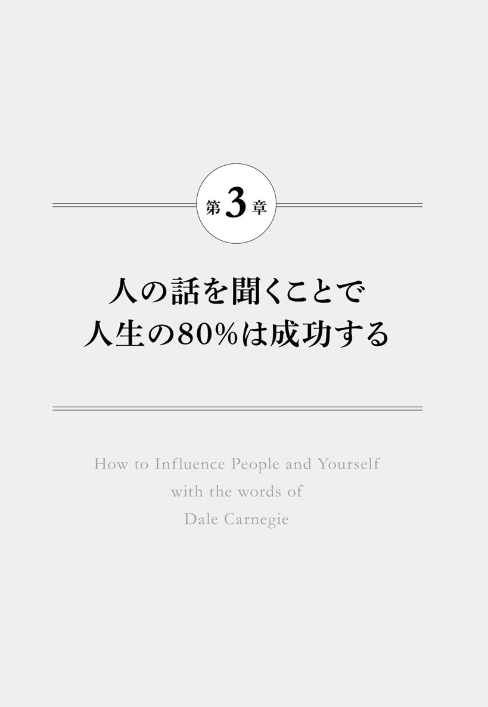

| カーネギーの『人を動かす』から学んだ自分と他人を変える力 | |
| 箱田忠昭 | |
| (2015) | |
カーネギーの『人を動かす』から学んだ
自分と他人を変える力
箱田忠昭
本作品の全部または一部を無断で複製、転載、配信、送信したり、ホームページ上に転載することを禁止します。また、本作品の内容を無断で改変、改ざん等を行うことも禁止します。
本作品購入時にご承諾いただいた規約により、有償・無償にかかわらず本作品を第三者に譲渡することはできません。
本作品を示すサムネイルなどのイメージ画像は、再ダウンロード時に予告なく変更される場合があります。
本作品は縦書きでレイアウトされています。
また、ご覧になるリーディングシステムにより、表示の差が認められることがあります。
本文中に「★」が付されている箇所には注釈があります。その箇所を選択すると、該当する注釈が表示されます。
序章 私を救ったデール・カーネギー
私には４人の母がいます
私の母は、私が５歳のときに死にました。それからまもなく父は再婚し、私と２歳下の弟に新しいお母さんができました。すごくいい人でしたが、父とあわなかったらしく、１年後に出ていきました。
最後の日に、その継母が私に言いました。
「忠昭さん、ごめんなさいね。お母さんはこの家を出ることにしました。実家に帰ります。もう会えないわ」
「ええ、どうして？」
「うん、訳は言えないけど。ごめんなさいね」
「僕ね、中学に入ったら自転車を買ってもらって必ず会いに行くからね」
「ほんと？ 待ってるわ。必ず来てね」
これが２番目の母との最後の会話でした。これ以来、会っていません。
小学校４年の時に３番目の母がきました。これはひどい人で、メチャクチャいじめられました。肉体的、精神的に虐待され、ついに２歳下の弟は引きこもり、学校に行かなくなりました。そうなると両親は弟をさらに責めつづけ、父は「学校へ行け。このなまけものが！」と言って撲りつづけたため、弟はいつも泣いていました。まあ、メチャクチャだったわけです。
また、その継母には連れ子がいて、私たち兄弟と食べるモノは別、食べる場所も別と、あからさまな嫌がらせをされました。さらに、父までも私たち兄弟にはまったくの無関心で、
「学生服買ってよ。入学式なんだ」
「わかった。そのうち買ってやる」
「だって明日なんだけど」
「ウルサイ！」
といった感じの父でした。
私はただ一人、セーターを着て中学の入学式に出ました。買ってもらえないのですから仕方がありません。あの時のみじめさは、今思い出しても顔が真っ赤になるほどですが、当然これだけではありませんでした。中学が始まって、最初の体育の授業がせまっていたときです。中学では全員白いトレパンをはいて授業を受けます。私は継母に言いました。
「体操服買ってよ」
「うるさい。買う金はない」
「ないって言っても......」
仕方なく体操服なしで体育の授業に出ることになりました。すると、さっそくおっかない体育の先生に呼ばれます。
「おい！ 箱田！」
「ハッ、ハイ！」
「どうして体操服を着ないんだ！」
「スイマセン。忘れました」
忘れたのではなく実際には親が買ってくれなかったからないのですが、こう答えるしかありません。当時は体罰が普通にありましたから、私は体育の教師に殴られて、こう言われました。
「ズボンをぬげ！」
「ハイ？」
「パンツになって校庭一周！」
私は顔を真っ赤にして、パンツ一枚で校庭を一周走りました。
「恥ずかしい。どうしてこんな目にあうんだ」
私はそれから赤面恐怖症になりました。みんなが私のことを笑っているような気がして、まともに人の目を見れなくなってしまったのです。しかも、しばらく私のあだ名はなんと「パンツ」になりました。
そんな３番目の継母ともお別れの時が来て、今は92歳になる４番目の母がいます。
このような家庭環境でしたから、性格は暗くなり、ねじ曲り、どんどんひねくれていったわけですが、悪いことは続きます。
大学入試もうまくいかなかったのです。２浪しても希望の大学へ入れず、挫折感、敗北感におそわれ、ますます暗い性格になりました。大学生活は真っ暗で、友達もできず、アルバイトばかりで成績も悪く、最悪の４年間でした。
飛び込みの営業マンをさせられる
したがって、今度は就職口が見つかりません。性格が悪く、成績も悪く、おまけに家庭も最悪。これでは一流企業に就職できるはずもありません。なぜなら一流企業は入社試験の際、家庭調査をしていたのです。今では考えられない程の差別的行為ですが、当時は当たり前のことでした。
私は一流企業に就職できず、やむを得ず外資系の企業に就職しました。今でこそ外資系企業と言えば聞こえはいいかもしれませんが、私の頃は外資系企業というのは、日本の企業に就職できない人が入る所でした。外資系会社へ入ると、さらに追い打ちをかけるように私が一番やりたくないと思っていた飛び込みの営業マンをさせられることになったのです。これが大変でした。
毎日毎日大きな重いカバンを持って、知らないお客の所へ飛び込んで売り込む仕事です。口ベタ、赤面恐怖症、オドオド病の私にできるわけがありません。そのクセ、自意識過剰で、うぬぼれが強いという、自分でも嫌になるくらいどうしようもない性格でした。「ああもうダメだ......もうこんな会社やめよう」と毎日のように考えていました。
デール・カーネギーとの出会い
そんなとき、同僚の上住元彦くんが言いました。
「箱田、お前正直言って評判悪いよ。性格が悪いってみんな言ってるよ。煮ても焼いても食えない男だと言われているよ」
みんなからの評判が悪いことは私もわかっていました。でも性格だからどうしようもないと思っていました。すると、上住くんが、
「箱田、この本読んでみな。もしかしたら役立つかも知れない」
そういって差し出したのが、デール・カーネギーの『人を動かす』という本でした。私はいつものようにひねくれた回答をしました。
「上住、本なんて読んだって性格は変わらないと思うよ」
「うん、まあね。そうかもしれない。でも何か役立つことが書いてあるはずだ。読んでみろよ」
上住くんはそう言ってくれました。これが、私にとっての人生の岐路でした。
今まで人間関係なんて考えてもみなかった私が、初めて手にした人間関係改善のための具体的手法が書かれた本。これが画期的な内容でした。『人を動かす』は、次の4つから構成されています。
１．人を動かす３原則
２．人に好かれる６原則
３．人を説得する12原則
４．人を変える９原則
私は学校の教科書も参考書もあまり真剣に読まないような男でしたが、この本だけは思いっきり真剣に読みました。実に具体的でわかりやすく、どんどん心にしみこんできました。特に上に挙げた４つの構成は、学校でも研修でも教えてくれないものです。
デール・カーネギー・コースを受講する
私はすぐに上住くんに心からお礼を言いました。
「すごくよかった。俺生き方が変わったよ。この本に書いてあることを実践すれば、俺の人生、すごく変わるような気がする」
そういうと、上住くんはデール・カーネギーの原理・原則を実践的に教えてくれる学校が日本にあることを教えてくれました。それは、デール・カーネギー・コースといって、デール・カーネギーのテクニックに基づき、効果的な話し方と人間関係について実践的に学ぶ講習会（プログラム）なのだとか。値段は４８９００円。当時の私の給料は２８８００円。月給２８８００円で４８９００円のセミナーを受けるのは大変です。
でも、私は絶対に自分の性格を変え、自分の人生を変えたいと思っていました。そこで青山にある日本のデール・カーネギー・コースの本部へ行くことにしました。
そこで出会ったのがデール・カーネギー日本の代表をしていた望月幸長先生でした。望月先生は、まあ元気よく熱意のかたまりのような人で、私にデール・カーネギー・コースの内容を説明してくれました。
デール・カーネギー・コースは１９１２年の発足以来80ヶ国以上で開催され、８００万人以上がコースを修了しているもの。主として次の５つの領域であなたの能力が向上するということでした。
１．自信の構築
２．ピープルスキル（人間関係）
３．コミュニケーションスキル（スピーチ、プレゼンテーション、ネゴシエーション）
４．リーダーシップスキル
５．悩み、ストレスをなくす
それらは自分にとって欠けているものばかり。私は即座に、
「望月先生、実は今すぐにでもコースを受けたいのですが、お金が無いんです。分割でいいですか？」と聞きました。望月先生はしばらく考えて、「分かりました。いいでしょう、今までそんなケースはないんですけど、箱田さんとても熱心ですから、分割でいいですよ」と言ってくれて、５回払いで入会することができました。
会社から言われて会社のお金で受講している人が多いなかで、私は自腹を切って入会しましたので他の人とは意気込みが違います。必死でやりました。その私の熱心さが望月先生に認められたのか、コース修了後に望月先生から無給のアシスタント（講師助手）をするチャンスを与えられました。
それからというもの、昼間は会社で働き、夜６時10分から９時まで赤坂のデール・カーネギーの本社へ出向いてアシスタントをするという生活を８年間続けました。８年間も講師の助手をやると、いいかげん内容も教え方もマスターしてしまいます。そんなある日、望月先生から、「箱田さん、あなたはとても熱心だし、スピーチもうまくなりましたね。インストラクター（講師）の資格を取りませんか？」というお話をいただいたのです。
インストラクターになるためのトレーニングや資格試験は難しいため、分厚い英語のマニュアル３冊を見ながら必死で勉強し、ついに日本で最年少のデール・カーネギー・コースの公認インストラクターになることができました。
私は24歳のときにデール・カーネギー・コースを受講し、その後アシスタント、そして講師としてデール・カーネギーの人生哲学を教えるようになり、ほんとうに人が変わりました。それは並行して続けていた仕事での変化を見ても、明らかでした。
人前で話すことができず、まったく売れなかった赤面恐怖症のダメ営業マンが、27歳で課長、29歳でマネージャー、そして33歳で部長になり、その後38歳のときヘッドハンティングされ、ついにイヴ・サンローランというブランドの社長に就任し、収入も大幅に増えたのです。私生活でも明るい性格の妻と結婚でき、３人の息子を立派に育て上げ、私自身が育った家庭環境とはまったく違う、明るい家庭を築くことができました。
ここまで書くとなんだか自慢みたく聞こえるかもしれませんが、これらはすべてデール・カーネギーの人生哲学を学んだおかげです。デール・カーネギーの教えによって、私は救われたのです。
私が本書でお伝えしたいことは、デール・カーネギーの３つの著書『人を動かす』『道が開ける』『話し方入門』にある内容を実践すれば、誰でも自分を変えられるということ。そして、赤面恐怖症でコミュ障だった私が、デール・カーネギーの人生哲学をどのように実践、応用して、自分を変えることができたのかという体験と経験です。
自分が変われば周囲も将来も変わる
本書のタイトルには「自分と他人を変える力」とありますが、カーネギーは「他人を変えることはできない」と言っています。次のエピソードはカーネギーがそれを説明するために紹介したものです。
あるとき、カーネギーの所へ一人の女性がたずねてきたときの話です。その女性は、
「カーネギー先生、私、今夫のことで悩んでいます」
「どうしたんですか？」
「実は夫が私にとてもつらくあたるのです。冷たくて、無関心で、意地悪で、私がつらくなるようなことを言ったりするのです。あまりにもひどいので、離婚しようかと思っています」
すると、カーネギーはこう言いました。
「それはひどいですね。離婚した方がいいでしょう」
さらに続けてこう言いました。
「奥さん、今離婚して、これからどうするつもりですか？」
「はい、もっといい人をみつけて再婚したいと思っています」
「なるほど。いいですね。ところで奥さん、再婚したいとおっしゃいましたが、誰かいい人でもいるんですか」
「いいえ、いません。これから捜します」
カーネギーは、
「ところで奥さん、あなたはお料理が得意ですか」
「いいえ、全然駄目なんです」
「お掃除とか洗濯は？ 裁縫は？」
「苦手ですね」
すると、カーネギーはこう言いました。
「それでは奥さん、離婚は一年待ってください。新しい男を見つけるために、料理学校へ行って料理を学びなさい。炊事・洗濯を得意にしてください。それと、チャームスクールへ行って、体をシェイプアップしてメイクアップの技術を身につけ、もっと魅力的な女性になることです。そうすれば、いい男が見つかるでしょう」
すると、その女性はこう言いました。
「なるほど、カーネギー先生の言う通りですね。わかりました。一年間頑張ってみます」
それから一年後、その女性が再びカーネギーの所へやってきて、言いました。
「カーネギー先生、私、離婚するのをやめました」
「ほほう、なぜですか？」
「実は一年間先生のおっしゃった通り、料理を勉強し、炊事洗濯等もきちんとやり、なおかつチャームスクールへ行ってシェイプアップしました。そしたら主人がとても優しくなったんです。もう離婚する必要はありません」
もうおわかりですね。カーネギーは「他人を変えることはできない。自分を変えることはできる。自分が変われば、他人も将来も変わる」という人間関係の法則を教えたのです。
まずは自分が変わることです。もしも私が昔のまま根暗で、挫折したままの自分であれば、今の私は決して存在しなかったでしょう。
デール・カーネギーは次のような言葉を残しています。
Carnegie says
熱意を持って行動しろ！( Act enthusiastic! )
先ほどデール・カーネギー・コースで学べるものはすべて私に欠けているものだと話をしましたが、コースを受講する前から私が唯一持っていたものがあります。それは、デール・カーネギーがもっとも大事なものと考えていた「熱意」です。
私は上住くんがくれた『人を動かす』を読み、強烈に「変わりたい」と願い、その強烈な願いは熱意となり、私を行動に駆り立てました。本を読んですぐに上住くんにお礼を伝えにいったこと。デール・カーネギー・コースの存在を聞くやいなや、お金がなくても「どうしても受けたい」と分割払いの約束をとりつけたこと。コースのカリキュラムに誰よりも必死に取り組み、アシスタントというチャンスをもらえたこと。これらは、すべて私が熱狂的に行動した結果と言えます。
すべての始まりは、上住くんのくれた一冊の本。この本のおかげで、私はかけがえのないもの、つまり熱意を持つことができたのです。
ですから、願わくば、『人を動かす』という一冊の本が私にとってすべての始まりとなったように、本書があなたにとっての始まりとなるよう、また「熱意を持つ」きっかけとなるよう、心から願っております。
Contents
How to Inf luence People and Yourself with the words of Dale Carnegie
きっかけは「話すこと」への小さな自信
さて、序章で散々「カーネギーの『人を動かす』と出会ったことで変わった」と話しましたが、そんな簡単に変われたわけではありません。本を読んですぐに受講したデール・カーネギー・コース。それは、カーネギーの３冊の本のエッセンスを盛り込んだすばらしいもので、私は必死に取り組みましたが、そうはいっても週一回夜６時から９時までの全14回のコースでしたから、時間にするとたった42時間です。たかだか42時間でカーネギーの教えをすべてマスターすることはとうてい不可能なことです。
では、ここで少しデール・カーネギー・コースで私がどんなことを学んだのかご紹介しましょう。私が受講したプログラムの当時のテキスト（40年以上前のものです）を見てみると、★の図のように構成されています。
一回の講義につき２つのテーマについて学んでいくのですが、毎回テーマに基づいた自分の体験談を話すことが課題として与えられました。受講生みんなの前でテーマについて２分間にまとめて話をします。毎回２つのテーマを学ぶので、２分間×２テーマで、トータル４分の間、人の前で話すわけです。
言うまでもなく、赤面恐怖症の私がうまく話せるはずがありません。しかし、２分間のスピーチを毎回２回、14週に渡って繰り返しやっているうちに、変化が訪れました。しだいに人前で話すことに慣れていったのです。元がひどかったこともあるのかもしれませんが、少しずつ話せるようになっていくのが自分でも実感できました。そのことが、私に小さな小さな自信を芽生えさせてくれたのです。
この本当にわずかばかりの自信、これが自分を変える第一歩でした。わずかばかりの自信を得たら、私はもっと上手に話したいという欲求が生まれました。それは行動にも表れ、学んだカーネギーの話し方を実践してみるようになりました。すると、どうでしょう。飛び込みセールスでもしだいに結果が出るようになっていったのです。
もし、あなたがコミュニケーションに苦手意識を持っていて、そんな自分を変えたいと思っているのであれば、私がそうであったように、まず話し方を磨いて自信をつけてみるのはいかがでしょうか。ほんの小さな自信でいいのです。その小さな自信はあなたが変わるきっかけになるはずです。
このことがきっかけで、私は今では人前で話すことを生業とするようになりました。赤面恐怖症でコミュ障だった私を知る人にとっては想像すらできないことでしょう。私自身だって信じられないくらいなのですから。
人前での話し方は喫茶店方式の雄弁術５大ルール
では、ここからは小さな自信を手に入れるためにデール・カーネギーの話し方の法則を学びましょう。
話の上手な人と下手な人の差は、どこにあるのでしょうか。聞いていて眠くなるような話と、思わず身を乗り出して聞きたくなるような話は、一体どこが違うのでしょうか。
私は講師として話し方を教えるようになったある日、カーネギーが教える話し方のヒントが喫茶店にあることに気づきました。一度喫茶店へ行って、話に夢中になっているカップルやグループの様子を観察してみていただきたいのですが、彼らが一様に身振り手振り豊かに、面白おかしく、時には笑い転げているところが見られるはずです。
考えてみると、誰でも親しい人との対話では雄弁家になっているものです。そういう場では知ってか知らずか、カーネギーの提唱する話し方の法則を自然に実践していたのです。ですから、喫茶店で親しい人に話すのと同じやり方でやれば、うまく話せるはずです。喫茶店で、話に夢中になっている人たちの話し方の特徴は、おおよそ次の通りです。
・具体例、出来事、実例、体験が多く話される
・細部描写が明確で、状況が手に取るように表現されている
・喜怒哀楽の感情が、そのまま出ている
・当然のことながら、口語体、会話調で、普段の言葉で話している
・相手と対話しており、一方的なおしゃべりになっていない
これらの特徴から、会話するときも、大勢の人の前で話すときも、同じやり方でやればいいと確信し、それを「喫茶店方式の雄弁術５大ルール」としてまとめました。
次からは順を追って、この５大ルールを実際に活用する方法を説明します。今後の会話やスピーチに必ず使って、その効果を確かめてみてください。
ルール１ 話は具体的であれ
具体例、実例、出来事を話せ
大学の授業のような、つまらない話、眠くなる話というのは、おしなべて抽象的な話です。ところが、つまらない教授の話でも、授業の合間に「これは余談ですが......」と、なにかのエピソードや裏話が披露されはじめると、学生も俄然ひきこまれる。だから、授業中によく話が脱線する先生のほうに人気があったはずです。
Carnegie says
おもしろく話す能力というものは、正式な教育を受けているいないにかかわらず、具体的かつ明確に話すという幸せな習慣を持つ人に自然と備わるものである。
『話し方入門』Ｐ２７１
エピソードや裏話というものは、具体的だから面白いのです。これから皆さんがスピーチをするときは、必ず具体例、実例を多く入れるということ。これがなによりも人をひきつけ、また話しやすいということを肝に銘じてください。
ともかく実例、出来事で、あなたの話をいっぱいにしなければなりません。
仮に、30分間のスピーチをする場合でも、ポイントは一つか二つにしぼって、それにまつわるエピソード、実例、具体例を話すようにします。
たとえば、「常に積極的に前向きに行動せよ」ということを、聴衆に話したいときに、ただ単に「皆さん、これからは前向きに行動しましょう。後ろ向きでは駄目です。積極思考が大切です。前向きでなければ、なにごとも成就しません......」というような感じで話を進めても、聴衆をひきつけることは絶対にできません。
そうではなく、次のように最初から実例を話すのです。
「皆さん、近江（おうみ）の商人という話を知っていますか？
時代は江戸時代のことです。一人の近江商人が、上方（かみがた）で一旗あげようと思いました。道中、同じ思いをもって江戸からはるばる上方へ向かっている江戸の商人と知り合い、二人で旅を続けました。二人が上方の入口に着き、いよいよこれから乗り込もうというときです。
峠の茶屋で一服し、水を飲んで、いざ出かけようと立ち上がったとき、茶屋のお婆さんに呼び止められました。『もしもし、旅の衆。六文じゃ、六文じゃ』。
二人の商人が、なんのことかといぶかっていると、お婆さんは『ここでは水一杯が六文じゃ。六文ずつ置いていってくださいよ』と言いました。
二人ともびっくりしました。江戸の商人は『なんとまあ、上方とは恐ろしいところだ。水を飲んだだけで六文も取られる。こんな滅茶苦茶なところでは商売なんかできないな』と思い、すたこらと江戸へ逃げ帰りました。
しかし近江の商人は、『うん、これは面白い。上方では水を飲ませるだけで金になる。ようしやるぞ』と言って、上方目がけて駆けて行ったということです。
どうでしょうか。皆さん、やはりわれわれが商売に成功するとするならば、この近江の商人のように、前向きにいくべきだと思います。
西洋にも同じような話があります。
昔、アメリカ人とイギリス人の靴のセールスマンが、アフリカに行ったときの話です。
アフリカに到着し、二人とも驚きました。現地の人たちは、すべて素足で靴など履いていません。イギリス人のセールスマンは、がっかりして本国に電報を打ちました。『アフリカでは、靴のビジネスの見込みなし。皆ハダシ。このまま帰国する』。ところが、アメリカのセールスマンは『大至急靴を５万足送れ。アフリカ人は皆ハダシ。ビジネスのチャンスは無尽蔵』と打電したそうです。
同じものを見ても、積極的思考で見るのと、否定的思考で見るのとでは、これだけ違います。
ボトルのなかのウィスキーを見て、中身が半分残っていたら、『アレ、もう半分しか残っていない。嫌になっちゃうな』と否定的に考えるのではなく、『しめた。まだ半分も残っている。これでまだ楽しめるぞ。どうやってこの半分を生かそうかな』と考えるのとでは、どちらがいいでしょうか。もちろん、後者でしょう。
皆さんこれから商売を志すものとして、つねに積極思考で前向きに行動してください」
さて、このスピーチで私は具体例を３つ挙げました。近江の商人、アメリカの靴屋、およびウィスキーのボトルの話です。わずか３、４分のスピーチで、３つの具体例を挙げています。だから聞いている人は、興味深く聞けるし、印象に残るのです。ともかくスピーチには、実例、具体例、エピソードをちりばめねばならなりません。
体験を語れ
具体例、実例のなかでも、最も話しやすいものは自分の体験です。
Carnegie says
私たちはとりわけ、話し手の体験に基づいた話を聞きたいものです。...中略...一つのちょっとした話。それが関心をとらえる秘密なのです。
『話し方入門』Ｐ１９２
実際に喫茶店で友達同士が話すことは、ほとんどすべて具体例、出来事、実例です。そのなかでもっとも多いのが自分自身の体験です。自分自身の体験、経験は、最も話しやすい実例といえます。
たとえば、テレビについて話せといわれたら、次のように話したらどうでしょう。
「テレビとは、英語のテレビジョンの略であります。これは、画面に映像が映り、しかも音声が出てくるものであります。１８４３年、アレクサンダー・ベーンという人が、初めてテレビを考案しましたが、アメリカのブラウン博士が、１８９７年に初めてガラスの管に人の映像を映し出したといわれています。テレビは現在、普及率が全世帯の99％に達し、また......」
このように単なる事実を述べるだけでは、無味乾燥なもので、人をひきつけることはできません。テレビについて話せといわれたら、次のように自分自身の体験を話すと、生き生きしてきます。
「皆さん。私が小学六年のとき、つまり昭和32年ですが、その頃はプロレスの力道山が全盛の時代でした。私の家はあまりお金がなかったので、テレビはありませんでした。
ですから、テレビを見ようと思ったら、近くの公園に街頭テレビを見に行くか、お金持ち（当時は大体お医者さんでしたが）の家にテレビを見せてもらいに行くことしか方法がありませんでした。
私は、毎週金曜日の晩の『三菱ダイヤモンドアワー』という、プロレスの番組を見るのが好きでした。クラスのなかに、坂崎君という医者の息子がいたので、彼と仲良くなり、彼の家に金曜の夜８時に行ってテレビを見せてもらいました。
ある時、フレッド・ブラッシーと力道山の血闘があり、フレッド・ブラッシーが力道山の額に嚙みつきました。力道山が痛がって足をバタバタさせ、苦悶の表情をします。
嚙みつき魔ブラッシーに嚙まれた額からは、血がタラタラと流れ出ています。ブラッシーは、その血を口からぺっとリングの上に吐き、悪魔のように笑っています。
僕たちは『力道怒れ、力道怒れ』と、思わずテレビに向かって叫んでしまいました。我慢に我慢を重ねた力道山が、突如立ち上がって怒りの空手チョップをフレッド・ブラッシーの喉元に叩きつけます。ブラッシーは、一発の空手チョップでドーンとリング上にひっくり返ります。立ち上がっては、また空手チョップで叩きのめされ、立ち上がっては叩きのめされ、何度も叩きのめされた後、リングにひざまずいて力道山に『もうこれ以上は許してくれ』と哀願します。
日本人の観客は大喜びです。私は外国人をやっつける力道山の英雄的強さに憧れたものでした。そんな時代でしたから、自分の家にも早くテレビが欲しいなあ、といつも思っていました」
このように自分の体験を話すとわかりやすいし、また聞いているほうも、興味深く聞くことができます。自分の体験というのは、抽象的なことと違ってなかなか忘れることもありません。人前で話をするときは、できるだけ直接経験した出来事を実例にすると、うまく話せるようになります。
体験を話す練習をしよう
体験を話す練習としてもっとも扱いやすいテーマは「子どものころの出来事」や「学生時代の思い出」です。これらのテーマで、スピーチのトレーニングをしてみましょう。
Carnegie says
練習を積むこと。これは最も大切なポイントである。恐怖心は自信の欠如が原因であり、自信の欠如は自分の実力を知らないことから来る。そして、実力を知らないのは、経験不足の結果である。つまり、成功した経験を積めば恐怖心はきえるということである。
『話し方入門』Ｐ22
余計な前置きなしで、すぐに「いつ」「どこで」を明確にして、話を始めるのがコツです。テーマをふられたら、すかさず自分自身の過去の体験を思い出す。そして、それを喫茶店で友達に話すように語り出せばいいのです。
たとえば、「実は、私が小学校３年の時（いつ）、初めて東京タワーに上りました（どこで）......」という形で始めればいいでしょう。
続けて、「誰と行ったのか」「どう思ったのか」「どのような会話があったのか」「どのようなことを行ったのか」「なぜ忘れないのか」などを、ありのままに語ることです。
結婚式のスピーチなども同じですね。通常そのような場合、指名されると「ただいまご紹介にあずかりました、新郎高木君の学生時代の友人の山本でございます。本日はお日柄もよろしく、新郎の高木君ならびに新婦の和子さんにおかれましては、誠におめでたく、ご両家の皆様方、なかんずくご両親のお喜びもいかばかりかと拝察申し上げる次第でございます。かえりみますれば......」
という具合に、長々と前置きをして無味乾燥な美辞麗句を並び立てた、つまらないスピーチになりがちです。そうではなく、体験、エピソードから入れば話しやすく、また出席者の心をとらえることができるはずです。
たとえば、「高木君、和子さん、今日は本当におめでとう。実は３年前に、私と高木君とで山形県の蔵王にスキーに行ったことがあります。その日は２月１１日で建国記念日の祝日でした。高木君は、スキーがとても上手でして、その日も私は彼のコーチを期待してついて行ったわけです。ところが......」という形で始めると、どうでしょうか？ 続きが気になりませんか？
そのときのエピソードを話すようにすれば、実に話しやすく、また聞いている人をひきつけることができるはずです。
ルール２ 細部描写をできるだけ明確に話す
状況をできるだけ詳細に話す
実例を話す場合に注意しなければならないことは、あれもこれもとたくさんのことを話すのではなく、できるだけ一つの出来事に絞って話すことです。
つまり、一つの出来事の５Ｗ１Ｈを明確にして、状況を再現するわけである。あなたの人生に劇的な変化を与えた出来事を話す場合、それがわずか数秒間のことでも、実にドラマチックで、あなたの人生に大きな衝撃を与えた出来事があるかもしれません。
その数秒間の状況を、再現するように話すのがコツです。次の例をご覧ください。
「私は小学校の６年のときに、剣道を習っていました。私の自宅は杉並の荻窪にあり、自転車で15分くらいかかるところにある大義塾という道場に通っていました。大義塾に行くには、大きな坂を自転車で下っていかねばなりません。
私はある日、いつものように学校から帰り、荷台に剣道の道具をひもで縛りつけ、自転車に乗って道場に向かいました。
いつもの坂を下るとき、私は自転車のスピードを速め、ものすごい勢いで坂を一気に駆け降りました。坂のちょうど一番下のところが十字路になっており、そこを駆け抜けようとしたときに、突然左側から小型トラックがものすごい勢いで走ってくるのが目に入りました。
私は『あっ、ぶつかる！』と思いましたが、自転車は加速がついています。急には止まれません。まるでスローモーション映画のように、トラックが近づいてくるような気がしました。トラックの運転手も、目の前に自転車が飛び出してきたのに気がつき、急ブレーキをかけました。
『ああーっ、ぶつかる！』と思った瞬間、トラックのバンパーと私の自転車の後ろの部分がわずかに接触しましたが、なんとか通り抜けたのです。
それでも接触でバランスを崩したため私は激しく転びましたが、幸いなことに手と足を大きくすりむいただけで、大けがには至りませんでした。それこそ、ぶつかるのがあと０・１秒か０・２秒早かったら、私は確実にトラックに数メートルはね飛ばされて、命を失ったか、相当な重傷を負ったのではないかと思います。ですからそれ以後、私は自転車に乗るとき、坂道ではわざとブレーキをかけ、ゆっくり下るようにしています」
このように話せば、聴衆はその場の状況を自分の頭のスクリーンに思い浮かべることが可能になります。
Carnegie says
スピーチや会話の全体を通して絵を振りまきましょう。
そうすればあなたの話はもっとおもしろく、印象深いものになります。
『話し方入門』Ｐ２７４
私のスピーチ、プレゼンテーション・コースの受講生にも、最初に必ず「忘れられない出来事」というテーマで、話してもらうことにしています。
私と同じように自動車事故の話、あるいは海で溺れそうになったときのこと、あるいは隣の家が火事になったことなど、忘れようと思っても忘れられないショッキングな出来事を思い出して、その体験を語ってもらっています。
そのような体験は、おそらくその人の心にまざまざと焼き付けられたもので、忘れようと思っても忘れられるものではありませんから、細部描写を明確に、詳しく話すことにより、人をひきこむことができるわけです。
言葉で絵を描け
そんなに詳しく話したら、しつこくなるのではないかと思うかもしれませんが、決してそうではありません。しつこい話というのは、同じことを何度も何度も繰り返して話すことです。同じことを繰り返すのではなく、まるで「言葉で絵を描く」ように話すのです。
たとえば海水浴について話すとき、「先日、鎌倉に泳ぎに行きました......」ではダメですね。
「先日、８月15日のお盆休みの日に、私は、鎌倉の由比ガ浜へ妻と子ども二人を連れて、海水浴に行きました。その日は快晴、まさに雲一つない海水浴日和でした。長男の健一は小学校３年で、水泳教室に通っていますので自信満々です。長女の秀美は、幼稚園の年長組で５歳です。まだ泳げませんが、道中の車のなかではしゃいでいました。みんな同じことを考えるのか、道がとても混んでいて、世田谷の自宅から３時間もかかりました。
やっとのことで由比ガ浜に着いてみると、ものすごく混んでいます。人、人、人......いわゆるイモを洗うような状態です。右手には緑の江ノ島、沖に目をやると、小さなヨットの赤、緑、黄色などの帆の色が、青い海の色と鮮やかなコントラストを見せています。
真っ赤な水着と白い帽子をつけた秀美が、右手に浮き輪を持ち、左手で私の手をつかんで、『パパ、早く泳ごうよ』と言って、海のほうへ引っ張ります......」
このように描写することにより、「言葉で絵を描く」ように、聴衆はその場の様子をはっきりと想像できるようになります。この能力を磨くためには、普段、友達や仲間、家族などと話をするとき、意識的に詳しく状況描写をする練習を心がけておくといいでしょう。ここでもう一つ、「言葉で絵を描く」具体例を示しておきましょう。たとえば、デートについて話をする場合です。
「私は、だいぶ前にある女性とデートしたことがあります。彼女はとてもきれいな人でした。その日は天気もよく、おいしい食事を食べ、楽しいおしゃべりもでき、本当にいい思い出になりました」
もうおわかりかと思いますが、これはダメな例ですね。これでは、聴衆に訴えるものがあまりありません。「本当に楽しいデートだな」と聴衆に思わせるには、やはり５Ｗ１Ｈを明確にして、状況を詳細に話すことがコツです。「楽しかった、楽しかった......」と１００回繰り返しても、なにがどのように楽しかったのか伝わるものではない。
むしろ、その場の状況を、手に取るように詳しく説明したとき、はじめて聞き手は感情移入できるし、楽しさを共有できるのです。
「いつ」「どこで」「誰と」「なにを」「どのように」、そして「なぜ」そんなに楽しかったのかを詳細に描写すると、楽しさが伝わります。
「今から15年前のことです。私は、日本航空の国際線のスチュワーデスの佐藤道子さんという人と、デートをしたことがあります。彼女は当時23歳、背も高く、確か１６３センチくらいあり、丸顔の目の大きい人でした。その当時流行りの外巻きという髪形で、今で言うなら、ちょうどタレントの剛力彩芽のような感じでしょうか。
その日は５月３日、憲法記念日でした。朝９時ちょうどに、世田谷の等々力にある彼女の家の呼び鈴を押しました。彼女が『あ、どうも、武田さん。おはようございます』と言いながら、ニッコリと出てきました。その日の彼女は、赤いセーターに白いパンタロン、頭には白いヘアバンド、手には籐（とう）でできたバスケットをもっていました。セーターが体にピッタリしていたので、体の線がバッチリ出ていて、とてもセクシーでしたね。
私は、愛車の白のスカイラインの助手席に彼女を乗せ、一路まっしぐら、国道６号線を茨城県の筑波山に向かいました。
意外に道がすいていて、11時半ごろ筑波山のふもとに着きました。私が彼女に『ロープウェイに乗りましょうか？』と聞くと、『ううん、歩きましょうよ。せっかくだからハイキングしませんか』と言います。私は『うん、それもいいね』と言って、登山道を二人で頂上目指して歩きました。
筑波山はけっこう岩山で、登るのに骨が折れました。私は思い切って彼女の手を握り、引っ張り上げたり、キャッキャッと言ったりしながら、頂上に着いたのが午後１時頃。
頂上で、手ごろな岩の上に腰を下ろすと、彼女が『武田さん、お弁当にしましょう。私、実は今朝、おにぎりをつくってきたの。下手くそだから、おいしくないかもしれないけど......』と言って、白いバスケットを開きました。
私は、わざわざ今日のために、お弁当をつくってきてくれた彼女に感激して、二人並んで腰を下ろし、彼女の手作りのおにぎりを食べたわけです。
５月ですから周りは赤いつつじ、白いつつじ、ピンクのつつじが咲き乱れていました。空はまさに五月晴れで真っ青。美しく明るい彼女と本当に楽しいデートになりました。１年後、私は彼女と結婚し、あれから15年経ちましたが、今でもあのときのデートが忘れられません」
このように話したとき、聴衆はそのときの状況を頭のスクリーンに映し出すような感じになるはずです。
普段から詳しく話すことを習慣にするために、たとえば、「ウチの犬が......」と言わずに、「ウチで飼っているパクという真っ白のスピッツ犬が......」と言ったり、「私の友人が......」と言わずに、「私が中学時代一緒にバレーボールをやっていた石川という、背が１８５センチもある友人が......」と言ったりするように、意識してできるだけ具体的に言うことを頭に入れておいてください。
ルール３ 感情をそのまま出して話す
言葉をただ空中に投げるな
以前、ＮＨＫで毎年成人の日に放送されていた「ＮＨＫ青年メッセージ」や、大学生の弁論大会で見られるようなスピーチを聞いて、なにか虚しい気持ちになったことがある人はいないでしょうか。
彼らの大部分は、暗記した言葉をただ空中に放り投げているだけのような気がします。いかにもわざとらしい口調、言い回し、もっともらしい空虚な論調に、背中がかゆくなるような思いになるのではないでしょうか。
なんの経験もない若者が、「世界平和と戦争の防止について」などという、大それたテーマで主張されても感動はないし、また、それが即アメリカやロシアの大統領のような世界のリーダーたちにとって、参考になるような建設的なものとも思えません。
Carnegie says
大切なのは何を話すのかではなく、どう話すかだ。
『話し方入門』Ｐ１４６
彼らが、練習に練習を重ねて暗記した文章は、確かに暗記力を誇示するにはいいかもしれませんが、人の心を打つまでには至らないでしょう。
なにかが欠けているのです。それは、心あるいは人間味というようなものなのかもしれません。政治家でも、堂々としゃべる演説家よりも、とつとつと人間味のある話し方をする人のほうが人気があります。昔から、「巧言令色鮮矣仁（こうげんれいしょくすくなしじん）」と、ペラペラしゃべるだけでは心を打つことはできないと言われています。
人間味を盛り込むには、「人間は感情の動物」と言われているように、むしろ感情をそのまま出したほうが、相手の共感を得ることができるものです。
感情とはわかりやすく言えば、喜怒哀楽です。嬉しいときには嬉しそうに、楽しいときには楽しそうに、悲しいときは悲しそうに、怒ったときは怒りをこめて、そのままの感情を出したほうが人の心を打つものです。
たとえば、かつての首相田中角栄は、あるときは演壇で涙を流し、あるときは聴衆を怒鳴りつけ、あるときは呵呵（かか）大笑する、というような面を見せることにより、人の心をひきつけていました。
自分自身をさらけ出せ
スピーチは、人間と人間の心の交流です。ですから、無味乾燥な美辞麗句の羅列では、人を感動させることはできません。また、偉そうなお説教、たとえば「勉強しろ」とか「忍耐心を持て」「誠実であれ」というような、抽象的な美徳を説いても、誰も喜ばないし、感動を与えることはできないでしょう。
結局、人は相手の人間的な側面を垣間（かいま）見たとき、親しみを感じるし、共感するものです。
会社では、いつもバリバリ仕事をするやり手の部長が、週末にはボランティアで少年野球のコーチをしていることを知ったときとか、いつもニコニコして明るい女子社員が、目に涙を浮かべて抗議するとき、私たちは心を動かされるものです。
Carnegie says
Be Yourself（自分自身であれ）
自分を素直に、ありのままにさらけ出せ、ということです。
作った自分、あるいは他人からこう思われよう、というような偽りの自分を見せようとしたとき、聴衆はあなたを見破ってしまいます。「あの人は口ではあんなことを言っているけど本当は違うな」という具合にあなたの本心を読んでしまうわけです。
だから、スピーチをするときは、自分が本心から話したいと思っていること、訴えたいと思っていること、熟知していることについて、誠意をもって話すようにします。
そのとき初めて、あなたの話に真剣味が加わり、人は耳を傾けてくれるものです。だから、勇気をもって、自分自身をさらけ出さねばなりません。素顔をそのまま見せる努力をしなければならないと思います。
私が指導した受講生に、ある若い女性会社員がいました。いつものように「私の忘れられない出来事」というテーマで、２分間話してもらったときのことをお話ししましょう。彼女は次のように話し始めました。
「今から４年前のことです。当時、高校２年の弟は、１２５ｃｃのバイクに乗って、猛スピードで郊外の国道を走っていました。雨の日で見通しが悪い上に、ちょうど日が暮れはじめ、あたりも暗くなりかけていました。カーブを曲がり損ねた弟は、スリップしてそのまま電柱に衝突し、頭蓋骨骨折でそのまま亡くなりました」
と話しているうちに、感極まってきて、次にひと言「私の弟は、まだ17歳でした」と言ったときに、おいおいと泣き出してしまったのです。
それから、持ち時間の間、彼女は「すみません」と言いながら涙をボロボロこぼし、「私の弟は......」と言ったきり、ただただ泣くだけ。私も受講生仲間ももらい泣きしました。２分が経ち、ベルが鳴って、彼女のスピーチは終わりました。
その後、みんなの投票の結果、「今日最も感動的な話をした人」という賞が、彼女に与えられたのです。
彼女は別にスピーチをしたわけではありませんでした。最初20秒ほど話しただけで、後は泣いているだけ。でも、彼女の弟に対する思いが伝わり、私たちの心を動かしたのです。
彼女は、自分自身の感情をひたすらさらけ出しました。聴衆を感動させてやろうとか、泣かせてやろうといった意図をもって話したのではありません。ただ、自分の感情をストレートに、ありのままに出したことにより、人の心をとらえることができたのです。
よく「私事で恐縮でございますが......」と言い訳をして話す人がいます。自分のことを話すのはよくないと思っているみたいですね。しかし、「自分のことを話すな」というのは間違いです。もちろん、自慢話をしろというわけではなく、「自分が話したい、どうしても話したい」という熱意に駆られたもの、そしてそれが自分自身の体験であれば、一番簡単で話しやすいテーマになるということです。
自分を飾りたてる必要は何もありません。ありのままの自分を見せると、話のリアリティが増すのです。
人間的側面を見せる
私たちは、好きな人の言うことはよく聞き、嫌いな人の言うことは聞かないものです。つまり、スピーチにおいても、人間的なあなたの良さを知ってもらうことが大切です。
仮に、専門技術に関するスピーチをする技術者であっても、プライベートにおいては子煩悩な父親かもしれないし、愛妻家の夫かもしれません。または、病気の父親を看病する親思いの息子であるかもしれません。
話し手のそのような人間的側面を知ったときに、おそらく聴衆はそのスピーカーに好意をもつでしょう。したがって、スピーチにおいては、人間的側面を語るエピソードを話すのが効果的です。たとえば、ビジネスマンであれば次のように話します。
「皆さん、こんにちは。今日は私の鼻を見て、気になる方もいるかもしれませんが、どうかお気になさらずに。実は、きのう子どもと『高い高い』という遊びをしておりました。３歳の息子です。うちの息子は『高い高い』がとても好きで、私は何回も何回も息子を抱き上げて、天井に手がつくように、『高い高い』をしました。ところが、やっているうちに疲れてしまって『もう終わりにしよう』と言ったところ、息子が『お父さん、もっとやって、やってよ』と言って、手をばたばたさせたところ、私の鼻の頭をひっかいてしまったというわけです。鼻の頭ですから、バンソウコウを貼るわけにもいかず、いまだにヒリヒリしています」
こう話すと、おそらく聴衆は「なんとほほえましい、若いお父さんなのだろう」という気持ちをもつはずです。どうも人は、気さくな人、ざっくばらんな人、くだけた人が好きなようですね。だから、このような人間的な側面が垣間見えるエピソードを話すことにより、会場の雰囲気がくだけた感じになり、聴衆の共感が得られるのです。
人間的側面を出すには、自己開示をしなければなりません。自己開示（セルフ・ディスクロージャ）とは、心の壁を取り払い、自分をさらけ出し、裃（かみしも）を取り、ざっくばらんに、そして気さくにフレンドリーな態度で接することです。
ルール４ 普段の言葉で話す
やさしい言葉で話す
私が20代の頃、代理店説明会におけるプレゼンテーションにおいて、改まった話し方をして醜態をさらしてしまったことがありました。つまり、「本日はご多忙の折柄かくもにぎにぎしくご参集賜り......」というように、普段使わない言葉を使ったために、しどろもどろになってしまったわけです。
喫茶店で親しい彼女を前にして、「本日はご多忙の折柄......」という話し方をする人はいないでしょう。相手が何十人、何百人の場合でも、普段の会話のような話し方をすることです。
しかし、なれなれしく、友達のようなぞんざいな口の利き方をしてほしいというのではありません。丁寧でありながら、使い慣れた会話体で話をしようということです。
わかりやすく言えば、「本日は」と言わず、「今日（きょう）は」と表現する。同様に、「昨日（さくじつ）は」と言わず、「きのうは」、「一昨年（いっさくねん）」と言うより、「おととし」と、文語調、書き言葉ではなく、普段の話し言葉を使うことです。
同様に、英語の羅列や、専門用語のオンパレードも困ったものです。昔、ある大学の農学部の教授が「土壌の改良」について、農協で講演をしたことがあるそうですが、教授は専門用語や横文字を連発して、農家の人の前でとうとうと話を進めていました。そのとき、聴衆の一人が手を挙げて質問しました。
「あのう、ただいま先生がお話になったのは、赤ドジョウのことですか、それとも黒ドジョウのことですか？」
つまり、その農家の人は「土壌」ではなく「魚のドジョウ」のことだと思っていたということです。このことから学ぶべきことは、事前に聴衆について調べ、彼らのニーズや雰囲気に合った話をしなければならないということ。
いずれにしても、親しみやすく、わかりやすい言葉と口調で話すことは必須になります。研修の講師でも、いい講師は難しい話をわかりやすく話し、あまりよくない講師はやさしい話を難しく話すものです。これからスピーチ、プレゼンテーションをするときは、日常の会話で使う言葉で話すことを心がけてください。
熟知していることのみ話す
基本的に、「知らないことは話せない」ということです。
だから、スピーチが成功するかどうかは、スピーチ能力よりも、なにをテーマに選ぶかによって決まってしまう、といっても過言ではありません。
私は、坐禅の修行をかれこれ30年以上やっています。だから、坐禅について話せと言われれば、いくらでも話せます。しかし、イスラム教について話せと言われたら、５分ともたないでしょう。
ですから、スピーチ成功のコツの一つは、熟知していることを話すことです。
私のスピーチセミナーの参加者にＩＢＭ社の社員の人がいて、「コンピュータウィルス」について話してくれたことがありました。同様に、いすゞ自動車の人が「レシプロエンジンとディーゼルエンジン」の話をしてくれ、マツダの人は「ロータリーエンジン」の話をしてくれました。いずれも、実にわかりやすく、興味をひくものでした。
それは、彼らがその分野のエキスパートであり、その分野の研究を10年以上も続けている専門家だったからでしょう。彼らは、素人のわれわれにもわかるように、たとえ話や図解を入れて、明快に説明してくれたのです。
仮に、彼らに「ＰＫＯ」とか「日本の民主主義」について語らせたら、これほど上手に話せたかどうかわかりません。
Carnegie says
研究や経験、学習を通して、話す資格を得たことを話せ。
あなたが、興奮したことについて話せ。
あなたが、ぜひ話したいこと、聴衆に心から伝えたいこと、共有したいことを話せ。
よく準備し、調べ、熟知して、どうしても聴衆に伝えないではいられない、ということを話したとき、あなたのスピーチは成功します。自分の言葉で、自分の心をぶちまけることができるからです。
ルール５ 一対一で座談するように話す
以前、ある著名な女性ディスクジョッキーの人の随筆を読みました。彼女は、スタジオでマイクの前に座り、全国の何十万、何百万の聴衆に話すときでも、常にマイクの前に自分の大好きな恋人がいて、その人に話しかけているつもりで話している、ということが書いてありました。
スピーチもまさに同じです。何百人を相手にしていても、自分の大事な人に話しかけているように話さねばなりません。
かつてお茶の水や神田の駅頭で、過激派といわれる学生の演説を聞いたことがある人もいるかと思います。彼らはほとんど例外なく、コブシを振り上げて、大声で絶叫しています。道行く人は、「うるさいな」という顔で通り過ぎていき、積極的に傾聴しようという人はあまりいません。
選挙における、テレビの政見放送も同様です。大声で「私はー、このたびー、衆議院議員選挙にー、自由民主党よりー、立候補しましたー、山田太郎でございます。かえりみますれば、わが自由民主党はー、戦後60有余年にわたり国政を担い、国家の繁栄とー、世間平和のためにー、尽力してきた次第であります。不肖この山田もー、文教委員といたしまして、明日を担うわが日本の青少年の教育のためにー、粉骨砕身してまいりました......」という具合です。
このような、いかにも演説というスタイルは流行りません。もっと説得力を高めるには、しっかりとテレビカメラを見つめ、静かに話しかけるように、一対一で対話するように話すことです。
「皆さん、こんにちは。自由民主党の山田太郎です。皆さんのなかには、子どもをもつお父さん、お母さんも多いと思います。皆さんは毎日、新聞をお読みになっていらっしゃいますね。もちろん、私も読んでいます。でも、本当に最近は、読むたびに暗い気持ちになりませんか。たとえば、生徒が先生を殴るとか、小学生が仲間からひどいいじめに遭っているとか、登校拒否であるとか、家庭内暴力、中学生の自殺。私は最近、新聞を開くのが恐いです。この前、九州でしたか。高校生が仲間を山におびきよせて木にしばりつけて、ガソリンをぶっかけて焼き殺した、という事件がありましたね。オートバイを奪うためだったそうですよ。ぞっとしました。日本の教育は何か間違っていると思いませんか。このような教育の現場を見たとき、私はなんとか一日も早く、お父さん、お母さんが安心してお子さんを学校へやることができるようにしたい、教育現場の改革をしたい、という強い思いから立候補しました......」
どちらのスピーチが、訴えるものがあるでしょうか。もちろん、後者です。スピーチにおいては、聴衆に対し一方的に絶叫してはいけません。むしろ、喫茶店で親しい人に語りかけるように、対話するように話したほうがいいのです。
Carnegie says
15人程度のビジネス会議であろうと、１０００人を超える大集会であろうと、現代の聴衆が話し手に求めるのは、気楽なおしゃべりをする時の話し方、つまり聴衆の中のひとりを相手に話すのと同じような普通の話し方なのです。
『話し方入門』Ｐ１２８
私はプロの講演家、研修講師として、毎日たくさんの人に話をしていますが、講演後のアンケート調査では、「聴衆が何百人もいるのに、なぜか箱田さんが、私に話しかけてくれているような気がした」とか「箱田さんは、一人ひとりに話しかけているようで、説得力がすごくあった」と書いてくれる人がいます。これは大変うれしいことです。事実、私は演説するのではなく、聴衆の一人ひとりと対話するつもりで、話しているのですから。
「聴衆に話しかけるな！ 一人ひとりと対話するつもりで話せ！」と心に刻んでおいてください。
「人を動かす」３つの段階
私がデール・カーネギー・コースで学んだのは話し方の技術。そして、もうひとつ大切なことを学びました。それは人間関係の技術です。
私はもともと人間関係が苦手で下手くそな男でした。今でも家内から「あなたは人間関係を教えていながら人間関係は全然ダメね」と言われています。私は「そうかな、気をつけているんだけどなあ」と言うと、「あなたは毎日のように私を怒らせているんだもの、ダメよ」と変な理屈を言ってきます。
万人から愛される人など存在しませんし、成功したと言われる人にも必ず敵がいて中傷されたりするものです。まあ、それくらい人間関係は難しいものなのです。
しかし、カーネギーの書いた『人を動かす』は人間関係をよくするためのバイブルと言えるでしょう。全部で30の法則が書かれていて、最終的なゴールは、人を巻き込み、引っ張っていけるようなリーダーシップを発揮できる人を目指しています。
最終的なゴールまでには次のような３つの段階があります。
第一段階 人に好かれること
第二段階 人から協力を得ること
第三段階 人の態度と行動を変えること
この章と次章では、第一段階の「人に好かれること」について説明していきます。
人は自己の重要感を満たしたがる
生存欲、物欲、色欲
皆さんに質問です。人間の根本的な欲望にはどんなものがあるのでしょうか。幸せになりたい、食欲、お金が欲しい、名誉が欲しい、生きたい、色欲─といった答えが出るでしょう。お釈迦さまは人間の欲望を五欲といって五つに分けています。睡欲、食欲、利欲、色欲、名欲です。
また、心理学者のマズローは人間の欲望を五段階に分け、生理的欲求、安全欲求、社会的欲求、尊敬の欲求、自己実現の欲求としています。私は欲望というものを四つに分類しています。
まず、人間には「生存欲」というものがある。死にたくない、生きたいという欲望です。食欲、睡眠欲、寒ければ暖かくするなどの基本的な生理的な欲望です。
たとえば40年、50年と坐禅をやっている偉いお坊さんがいたとします。そういうお坊さんは「わしはいつ死んでもいい。生もない、死もない。生死を超越した坐禅を五十年もやればそういう心境になる」と常に言っています。しかし、道を歩いていて向こうからスピードを出した車が来るとあわててよけて、「危ないじゃないか、死んだらどうするんだ」とどなる。矛盾に満ちているようですが、生存欲というものはそれくらい強いものです。
２番目は「物欲」です。物欲というとお金のことをイメージすることも多いかと思いますが、お金そのもの、お金だけが欲しい人は、実はとても珍しく、二千人に一人ぐらいだと言われています。瓶の中にお金をためて毎晩、畳を上げて引っ張り出してお金を数える。そうしてニタッと笑って、再び瓶の中に大事にしまう。それを毎日やるのが楽しみという人もいるそうですが、一般的に私たちは「物が欲しい」「家が欲しい」「車が欲しい」「ミンクのコートが欲しい」、それらを手に入れるためにお金が欲しいのです。この欲望はみんな持っています。
それから、３番目に「愛欲」でしょう。私はもう少し広い意味でこれを「愛」と呼んでいます。「男性が女性を愛する」ということだけでなく、「親を愛し、子どもを愛する」「自分の会社を愛する」「自分の商品を愛する」「自分の国を愛する」といったもろもろの愛です。このような欲望も強いものです。
欲望のなかで一番強いもの
これらのほかにもう一つ強力な欲望があります。それは「人からよく思われたい」という欲望です。名誉心といってもいいでしょう。「偉くなりたい」「人に悪く思われたくない」「人にバカにされたくない」「人に認められたい」という欲望。これをデール・カーネギーは「重要感」という言葉で表現しています。この重要感は、人間の欲望の中でも一番強いものです。
皆さんは、美空ひばりさんをご存知でしょうか？ 戦後最大の女性歌謡歌手、いわゆる演歌の女王です。女王ですから、そうとうわがままで、文字通り女王様のようなふるまいだったようです。
あるとき、「美空ひばりショー」がありました。ところが、ある晩、開宴の前に美空さんが「なんだか風邪をこじらせてしまったみたい。ノドが痛くて。今晩歌えそうもないわ」と言ったそうです。
マネージャーが「でもひばりさん、もうお客様が１０００人以上も集まって、超満員の状態です。今さらキャンセルできないじゃないですか」と言うと、美空さんは、
「何言っているのよ。声が出ないのよ。無理して歌ってノドがつぶれたらどうするのよ」
「でも、お客にキャンセルを告げて、返金をすれば莫大な損害が出ます。何とか歌っていただけませんか」
「何度言ったらわかるの。私のノドつぶれてもいいの？ もうすぐ紅白歌合戦もあるし、ノドを大事にしなくちゃ。無理なのよ」
と、何を言ってもマネージャーの言うことを聞き入れてくれません。そこに劇場の社長があいさつに来たそうです。事情を聞いた社長は次のように言いました。
「ひばりさん、事情はよくわかりました。今日の公演は急遽中止にしましょう。ひばりさんのノドのほうがはるかに大切です。ひばりさんのノドは日本の宝のようなものです。かけがえのないものです。ただちに公演は中止にします。１０００人のお客様には私が命をかけて説明します。莫大なキャンセル料もすべて私共でかぶります。ひばりさんは直ちにお帰りになって、ノドの治療にあたってください。必要なら劇場専属の医者をつきそわせます。ともかく、ひばりさんは日本一の歌手ですし、日本の宝ですから、大事に、大事にしてください」
すると美空さんは、
「ちょっと待って。さっきから熱いお茶を飲んでいたら、少しノドの具合がよくなってきたみたい。難しい歌は無理でも、簡単な歌なら歌えそうだわ」
「いえいえ、ひばりさんは日本の宝ですから、どうか無理はなさらずにお休みください」
「大丈夫よ。私もプロだし、なんとかするわ」
すると、社長は次のように返します。
「本当ですか、ひばりさん。ありがとうございます。さすがです。ファンも大喜びでしょう。でも驚きました。ひばりさんのお仕事にかける意気込み、すごいです。まさに尊敬に値します」
その結果、その日の「美空ひばりショー」はキャンセルにならず無事に終わったそうです。この劇場の社長のアプローチはまさにデール・カーネギーの教える、相手の重要感を満たしたわけです。日本一の歌手、日本の宝と言い続けました。マネージャーはただ「出演してくれ」と主張しただけでした。社長はひとことも「出演してくれ」と言わず、「休んでくれ」と主張しました。
私はこの出来事から、人間関係の奥義を学んだような気がします。人間の最大の欲望は「重要感」で、重要感を満たしてあげれば人は動くということです。皆さんや私が重要感を持っているのと同じように、皆さんの上司も部下も奥さんも子どもも重要感を持っていることを素直に認めて、それを満たしてあげることです。これが、すべての人間関係の基本となります。
Carnegie says
人間関係の法則について、哲学者は数千年にわたって思索をつづけてきた。そして、その思索のなかから、ただひとつの重要な教訓が生まれてきたのである。...中略...「すべて人にせられんと思うことは人にもまたそのごとくせよ」
『人を動かす』Ｐ１４０
つまり、〝人にしてもらいたいことを人にしてあげる〟ということです。
これは、だれでも頭の中ではわかっていることかもしれません。問題は、どうすれば具体的に相手の重要感を満たすことができるかということになります。
私は人間関係の基本、そして相手の重要感を満たす方法として「丁・賞・感・関・謝の法則」というものを提唱しております。これは造語で、私がデール・カーネギーの人生哲学を学び、人に教え、自らも実践してきたなかでたどり着いた結論です。では、「丁・賞・感・関・謝」の順に説明していきましょう。
他人に対して丁寧であれ
「丁」というのは丁重の丁です。
「他人に対しては絶対的に丁重であれ」ということです。丁寧な言葉使いを心がけることはもちろん、他人には極力、敬意を払うようにします。言葉使いの乱暴な人、横柄な人は嫌われます。
私の家内は、元国際線のキャビンアテンダントをしていました。キャビンアテンダントはお客様をおもてなししなければいけませんので、しっかりとした教育を受けていて、言葉使いもとても丁寧です。
たとえば、私が仕事を終えて帰宅すると、家内は「お食事になさいますか？」と言います。普通だったら「ご飯にする？」となりそうなところを、このような丁寧な対応をされると、やはり私も大事にされているんだなと、うれしくなります。また、私にかかってきた電話を家内がとって私に替わると、相手は「箱田さん、いまの奥様ですか？ 上品な方ですね」と言われます。会っていなくてもそう感じるのです。要するに、「言葉使い ＝ 人柄」ということになるのです。
最近は、高年齢者の離婚が多いということを聞きます。大きな原因は、子どもの教育の問題でもなく、経済的な問題でもなく、夫婦間の礼儀がなくなっていることだそうです。
「あなたは私をバカにしている」「あなたは私を認めていない」という、つまらないことがきっかけになって口げんかになり、「じゃ、別れましょう」となることがあるようです。
それは奥さんを物として扱っているからです。「おい、あれを取れ」「あれって何？ あれじゃわかりませんよ」「わからないのか、バカヤロウ」といったような口論があって「私は我慢できません」という結果になるのでしょう。
わら一本でラクダを殺す
わら一本でラクダを殺すということわざが外国にはあります。
たとえば、部下からある日突然、辞表を渡されます。前の日に、「遅刻してはいかんぞ」と注意しただけのことですが、次の日になると辞表が出てくる。これが、わら一本でラクダを殺すということです。
どういうことかと言うと、ラクダの背中にわらをどんどん積み上げていきますと、その重さに耐えられる限界が当然あります。その限界に達したときに、その上にわら一本を乗せるとラクダの背中がばりっと折れる。わら一本はわずかな重さですが、そのわずかな重さで限界を超えたためにラクダは死んでしまうということわざです。
人間の心も同じです。
常日頃から、不平、不満が鬱積しているときに「遅刻してはいかんぞ」と言われ、限界に達して爆発してしまう。そのときの一言が、わら一本なのです。
小さなつまらないことの積み重ねが、しまいには大きな結果をもたらすことになることもあるし、人によってそもそも積み上げられるわらの量も異なるため、ちょっとしたことですぐに最後のわら１本になって爆発してしまうかもしれません。
ほんの些細な態度がわら一本となり、人間関係を破綻させてしまうことがあるのです。だから、私たちは「常に他人に対して丁重であれ」ということです。
大いに褒めて損はない
次は「賞」。これは、相手を褒める、賞賛するということです。
例として、私と息子の賢との出来事をお話ししたいと思います。
その日、私は福岡県飯塚市の商工会議所から招かれて講演し、飛行機で帰ってきました。東京から鎌倉の自宅に着いたのは夜の八時半頃。玄関を開けたら中からすごい勢いで次男の賢が飛び出てきました。
「お父さん、早く早く」と私の手をつかまえ、「これを見てよ、これ」と自分の首にぶら下げているものを見せようとするのです。
「何だい、これは」と見てみると、「鎌倉市秋季運動会マラソン第１位」と書いてありました。子どもは小学校４年生です。私はそれですべてを理解しました。
「あれ、賢ちゃん、これを取ったの？ やったねー！ 大変だったろう。どこを走ったんだい？」
「お父さん、知ってる？ 桔梗山２周したんだ」
「２周も。それで１位になったの？」
「うん。すげぇ横っ腹が痛かったけど、全部抜いたんだ」
「そうか。偉いなあ。じゃ、今からお祝いしてやろう」
と言って、かばんを玄関に置き、車を出して江ノ島のケンタッキーフライドチキンに連れて行き、チキンとアップルパイとコカコーラをごちそうしてやりました。息子はメダルをぶら下げて、本当においしそうに食べていました。
後で家内に聞くと、息子は私にこのメダルを見せたくて、七時半から一時間も玄関に立って、家の前をタクシーが通るたびに、外に飛び出して待っていたそうです。おやじに一言「やったなあ」と言われたくて待っていたのです。褒められたかった、よく思われたかったからです。
人間はやはり、いいことをしたら褒められたいという気持ちを持っているのです。だから、いくら褒めてもお金はかかりません。タダですから、どんどん褒めましょう。褒められて怒る人はいません。褒められると気持ちがいいのです。
ただし、あまりにも見え透いたお世辞になっては、かえって逆効果になることもありますので、心から相手を褒めるようにしましょう。
Carnegie says
心からの賞讃には、このようなはかり知れない威力がある。
『人を動かす』Ｐ１４３
私はカーネギーの教えを学んでから、とにかく人を褒めるようにし、それは今では習慣になっています。私がどのように人を褒めていたかというと、これから人に会うときは、事前に何を褒めるか準備をするようにしていたことも、その一つです。
たとえば、部長の息子さんが今年大学に受かったと知れば、部長に会ったとたんに、
「部長、おめでとうございます。息子さん大学に受かったそうですね。すごいですね！」
「うんまあね。ありがたいことに現役で入ってくれたから経済的に助かったよ」
「ええっ、現役ですか。驚きました。さすがです。私なんか二浪しましたから」
という具合です。
営業で取引先を訪問するのであれば、褒めることはもっと重要になります。営業で相手を褒める場合は２パターンあります。
ひとつは、担当者そのものを褒める場合です。私は、いつでも相手の褒める部分を見つけようと、相手の特徴に注目するようにしていました。たとえば、ネクタイが目についたら、「部長のネクタイはオシャレでカッコいいのでいつも注目していますけど、今日みたいな明るい色もすごくお似合いですね」と会った途端に褒めるようにします。
もうひとつのパターンは、会社そのものを褒める場合です。事前にＨＰで業績をチェックし、業績がよければ、
「ＨＰ拝見しましたけど、去年は業績がすごくよかったようですね」
「お、よく知ってるね」
「前年比１２０％と書いてありましたけど、何が売れたんですか？」
「実はね......」
と、相手は喜んで話をしてくれるでしょう。他にも「すごいキレイなオフィスですね」「社員の皆さん、元気な人ばかりですね」など、褒めることで相手の重要感が高まる上に、商談に入る前のいいアイスブレイクにもなるので、ぜひ大いに褒めてみてください。
感謝は「ミラー効果」で返ってくる
三番目の「感」は、感謝のことです。
人間は誰でも感謝されたいものです。皆さんも、憎まれるよりは感謝される人になりたいと思っているはずです。だけど、どうすれば感謝される人になれるのか。これは、とても簡単です。
こちらから感謝すればいいのです。感謝すれば、感謝されます。憎めば、憎まれます。「ミラー効果」といって、自分がしたことは必ず鏡に映るように返ってくるのです。
たとえば、私があなたを嫌だなと思った場合は、あなたも必ず私を嫌だと思っている。逆にあなたはいい人だと思っていると、必ずあなたも私をいい人だと思っている。ミラー効果とはそういうもので、自分の感情は必ず相手に伝播するものです。だから、まずこちらから感謝すればいいのです。与えたものは、そのまま返ってきます。
Carnegie says
感謝の言葉をふりまきながら日々を過ごす。
これが友を作り、人を動かす妙諦である。
私は以前、こんな失敗をしたことがあります。
私の会社で研修やセミナーの講師をしていた社員が、独立してから方々で「箱田は、言ってることとやってることが全然違う、口ばっかりだ」と言い回っているという噂を耳にしたのです。社員だったときは、講師のやり方を教えていた教え子が、です。
なぜなのか？ 理由はその教え子が毎年、田舎のお母さんにお願いして、お歳暮に高級なアワビの味噌漬けを私のところに送っていたのに、お礼のひとつもないということだったのです。
私はそれを知って、「感謝しなさい」と言っているのに、私自身もできていなかったと深く反省しました。それ以来、お歳暮やお中元が届くと、すぐにその場で電話をして感謝の気持ちを伝えたり、すぐにお礼のハガキを書いて送るようにしています。
自分が変わらなければ周りは変わらない
私は、スピーチの他に動機づけということを専門に教えております。これもデール・カーネギーに学んだことですが、動機づけというのは、自分が動機づかなければ、他人を動機づけることができないということです。
たとえば、私は人前で講演をするのが仕事です。ですが、たまに疲れていて、軽く流してしまおうかなと思うことがあります。そこで、仮にはじめて私の講演を聴く人たちだから、どうせわからないだろうと思って、いいかげんにやるとします。すると、その気持ちがてきめんに聴衆に伝わるのです。聴衆は「私の鏡」なのです。
逆にどんなに疲れていても、今までで一番いい講演をしてやろうと自分に気合を入れてやると、聴衆の方も力いっぱい聞いてくれます。
たとえば、「うちの社員はあいさつがない」「自分から進んで仕事をしない」「遅刻が多い」と責めてばかりいる社長に会うことがあります。では、その社長自身はどうでしょうか。やはり、できていないのです。社員を責める前に、まず自分自身が変身しなければならないのです。他人を変えることはできません。変えることができるのは自分だけです。自分が変われば他人が変わります。これが人間関係の基本ではないでしょうか。
声がけをいっぱいする
４番目の「関」は、関心です。つまり、他人に心から関心をよせることです。
人は「自分がどう生きるか」よりも、「自分はどう見られているか」「自分はどう思われているのか」のほうがはるかに気になります。同僚の給料が自分よりも高いと知ったとき、メチャクチャ腹を立てたり、「どうして......」と落ち込んだりします。「人によく思われたい」「立派だと思われたい」「すごいと思われたい」という気持ちで毎日過ごしているのです。
デール・カーネギーも人に好かれる６原則の第一番目に「誠実な関心を寄せる」とあげています。
Carnegie says
相手の関心を引こうとするよりも、相手に純粋な関心をよせることだ。...中略...人間は、他人のことには関心を持たない。ひたすら自分のことに関心を持っているのだ───朝も、昼も、晩も。
『人を動かす』Ｐ74
私は以前、イヴ・サンローランというブランドの日本支社長をしていました。シャネル、クリスチャンディオールと並ぶ高級品で、若い女性に人気がありました。
当初、私は口紅を１本４０００円で発売しましたが、あまり売れませんでした。当時、ライバルのシャネルもクリスチャンディオールも１本５０００円でしたから、それより１０００円安く売り出せば売れるだろうと判断したわけですが、それが裏目にでました。
１０００円安いということは、サンローランはそれだけシャネルやディオールよりも格下の商品だと思われたのです。格下、安物のイメージでは売れないのです。ブランドを買うのは見栄です。私もとりあえずベンツに乗っていますが、性能がいいからとか、乗り心地がいいということではありません。燃費もよくありません。若い頃乗っていたトヨタのクラウンの値段は半分以下、性能もいいし、乗り心地も抜群で、申し分のない車でした。
それでもベンツに乗り換えました。それは見栄であり、重要感です。「箱田さん、いい車に乗っていますね。さすがですね」と言われると、気持ちいいんですね。残念ながらクラウンでは言われません。
サンローランも同じです。「うわー、それサンローランでしょう。高かったでしょう」と言われたいのです。格下、安物じゃ絶対ダメなのです。ですから、私は商品をシャネル、クリスチャンディオールと同等か、それより高くしました。すると、やはり安かったときより売れていきました。
この話からわかるように、人は他人からよく思われたい、重要視されたいという欲求をもっているということです。ですから、重要視してくれる人、良く思ってくれる人が好きなのです。バカにする人、見下す人などは大嫌いです。
他人を重要視するということでもっとも簡単なことは「声かけ」です。つまり、常日頃からコマメに声をかけて、関心をもっているということを示してあげるのです。
「どうですか。風邪治りましたか？」とか「今日は寒いですね。もう暖房を入れていますか？」というようにのべつ話しかけ、相手の言うことに耳を傾けます。
たとえば、あなたが大胆に髪を切ったとします。会社に行くと、内心は人がどう思うのか気になるのではないでしょうか。それなのに顔を合わせても誰も髪のことにふれてくれない。そんなとき、「あ、髪切ったの？ すごく似合ってるじゃん。長いのもよかったけど、短いのも素敵だね」と言ってくれる人がいたらどうですか？ そう言ってくれた人に好意を抱いてしまうと思います。
ですから、この章のはじめにも述べましたが、人にしてもらいたいことを人にしてあげるのです。髪を切った人を見かけたら、「似合ってるね」「かわいくなったね」と声をかけて、関心を示すのです。
Carnegie says
他人に積極的に話しかけ、のべつまくなしに、次のメッセージを送り続けるべきだ。
You are important.（あなたは重要です）
You are necessary.（あなたは必要とされています）
You are great.（あなたはすごいです）
カーネギーが教える、「名前を覚える」「聞き手にまわる」「笑顔を忘れない」などの人間関係のルールはすべて、相手に関心をもって重要感を与えるということですね。
断固として謝る
最後の「謝」は、「謝る」です。
謝れば済むものを、頭を下げることができず、問題をこじらせてしまう人がいます。「自分が悪くないのに、なぜ謝る必要があるのだ」と考える人もいます。
たとえば、営業をしていてアポイントの時間に５分くらい遅れたとしましょう。このときどうするでしょうか？ よく耳にするのは、「すいません。電車が遅れまして」という文句ですが、こういうのは言い訳と言います。
そうではなくて、断固として謝るのです。あなたが謝られる立場で、「遅くなって申し訳ございません。大変ご迷惑をおかけいたしました。今後、二度とないように気をつけます」と深々と頭を下げられて謝られたらどうでしょう。
「いやいや箱田さん、たった５分くらいでいいですよ。そんなに頭を下げなくても」と逆に恐縮してしまったり、誠意ある態度に、「この人は礼儀の正しい人だな」と評価が上がったりするのではないでしょうか。
でも、誰でも謝るのは好きではありませんから、これがなかなかできないのです。「遅刻したのは私のせいではない。電車が遅れたのが悪いんだ」と言わんばかりに、「電車が遅延して、遅れてしまいました」と言い訳をして、「申し訳ございません」と頭を下げることができないのです。
もし、本当に電車が遅延していたとしても、たとえ自分が悪くなくても、謝ってしまうことです。そうすることで「あの人はとても謙虚な人ですね」「腰の低い人ですね」というように、評判がよくなり、人に好かれるようになります。
Carnegie says
自分に誤りがあるとわかれば、相手のいうことをさきに自分でいってしまうのだ。そうすれば、相手には何もいうことがなくなる。十中八、九まで、相手は寛大になり、こちらの誤りを許す態度に出るだろう。
『人を動かす』Ｐ１８６
私なども若いころは頭を下げるのが嫌でした。商品のクレームでお客さんが怒っているときでも、「なんで私が謝らなければいけないんですか。私は悪くありません」といって謝らず、ますます相手を怒らせてしまったこともありました。
でも、諸々のトラブルも謝ってしまえば、解決するものです。断固として謝る、というのがいいです

社長を解任される
Carnegie says
人の話を聞くことで、人生の80％は成功する
この章のタイトルにもなっている言葉は、カーネギーの言葉です。このルールを忘れてしまっていたために、私に起きた不幸な体験の話をしましょう。
私は41歳のときに独立して、いまの会社をつくりました。しかし、そのきっかけは、私がそのとき勤めていた会社をクビになったことでした。
当時、私は有名ブランドのイヴ・サンローランの日本支社長をしていました。38歳で社長になったこともあり、私は思い切り突っ走っていました。しかし、なかなか欧米人には日本式のやり方を理解してもらえず、本社のアメリカ人やフランス人は私のやり方を冷たく見ていて、いろいろとイチャモンをつけてきました。
最初のうちは私も一生懸命本社の幹部に説明していました。いわゆる報連相をしっかりとしていたのです。しかし、やがてそれもあまり意味をなさないくらい、本社の人間との間に亀裂が入り始めると、いつしか独断でプロジェクトを進行させるようになっていたのです。
それでも、うまくいっているときはそのやり方で構わないのかもしれません。しかし、うまくいかなくなったときが問題なのです。アメリカ本社からはつねに見張られ、日本支社のなかでも、若い社長をよく思わない人がいたようで、本社にいろいろと密告されていたようです。そんなことが重なって、ある日、私はついに本社の幹部から注意を受けました。
「ミスター箱田、あなたは前向きで積極的でいいのですが、本社の言うことを全然聞かない。これは大変困る。もっと本社の言うことに敬意を払ってください」
こう言われてから１年後、私はそのアメリカ人幹部にクビを切られました。その幹部と弁護士が突然、私に解任の通知をつきつけたのです。即日解雇です。
これはものすごい体験でした。就職、転職、退職などは誰でも経験することですが、クビになって、即日解雇されることはあまり体験できることではありません。
結局、クビの原因はコミュニケーションの欠如でした。そのアメリカ人幹部が言ったように、「ミスター箱田は、本社の言うことを全然聞かない」ということがすべての原因です。私は若かったせいもあり、思い上がっていたのかもしれません。
相手は一生懸命に、私のためを思って話してくれていたのに、私はそれをいい加減に聞き流していたのです。相手のことを思って話していたことを無視されれば、誰だって腹が立って当然です。結果的にアメリカ人幹部は、愛想をつかし、クビを切ったわけです。
コミュニケーションの欠如、とりわけ、人の話を聞かない、ということが致命傷となった痛恨の例です。あなたが私のような失敗をするとは限りませんが、他山の石にしていただければ幸いです。
次からは、私がこの失敗を生かし、どうやってカーネギーの人生哲学を実践したのかをお伝えします。
聞き役に徹する
スーパーの副社長との出会い
さて、冒頭に話したとおり、私はイヴ・サンローランをクビになった後、インサイトラーニング株式会社という研修会社を設立しました。研修会社といっても、私が社長、講師、営業部長、雑用係、すべてを兼ねるワンマン会社でした。もちろん最初のうちは仕事がまったくありません。
毎日毎日一生懸命仕事を求めて売り込んでいたある日、関西に本社のある大手のスーパーの副社長を紹介されました。外資系の社長のときには移動はいつもグリーン車でしたが、失業者同然の貧乏社長になり、新幹線の普通車で大阪へ向かいました。
副社長は人柄のよさそうな60歳を過ぎた方でした。名刺交換をして、そろそろ本題の研修の売り込みをしようとしましたが、どうみてもそういう感じにはなりません。「研修のことなど、担当者に言いなさい」と言われそうで、どうやって売り込んでよいのかわからない雰囲気でした。そこで、私は副社長に次のように言いました。
「副社長、あのう、一つだけおうかがいしてよろしいですか？」
「いいですよ。何ですか？」
「副社長が今のお仕事をお始めになったきっかけは何でしょうか？」
すると、副社長は「待ってました」とばかり、終戦直後に行商をして生計を立てていたことを話し始めたのです。若い頃、ものすごく苦労をして今の地位を築いたことを語ってくれました。私は目を輝かせ、熱心にメモをとり、うなずき、あいづちを入れて聞きました。私は、ただただ聞くだけでした。研修プログラムを売り込むチャンスもまったくなく、そのあと私は帰されました。
それから１ヵ月後、私は別の用事で大阪に行く機会がありました。そのとき副社長に少しだけあいさつをしようと思い、再度、スーパーの本社を訪問したところ、副社長は上機嫌で会ってくれました。
ひと通りのあいさつをした後、副社長が私に、
「どうですか、箱田さん。独立してから仕事は順調にいっていますか？」
と聞いてきました。私は正直に言いました。
「なかなか厳しいですね。独立してやっていくのは大変です」
すると副社長は、
「そりゃそうですよ。独立はそう簡単にはいきません。実はね、私も終戦直後に行商で自立しましてね。そのときは大変な苦労をしました。その頃を思い出すとね......」
と、ひと月前とまったく同じ話が始まりました。私は初めて聞くふりをして、一生懸命に聞きました。真剣にうなずき、ときどき質問をしたりして、またまた一時間くらい聞き役に回りました。
すると、話が一段落したところで、副社長は秘書を呼び、「人事部長の菊池君を呼んで下さい」と言いました。そして、人事部長が来ると、副社長は次のように言いました。
「菊池君、ここにいらっしゃる箱田先生は以前、外資系の会社で社長をしていた方だ。また、坐禅の修行も長くしている。いまどき珍しい和魂洋才の先生だ。どうだ、今度の全国店長会議のゲストスピーカーとして講演をお願いしたら？」
「副社長、それはグッドアイデアですね。ぜひ、お願いしたいですね」
ということになり、私は即決で仕事をもらうことができたのです。
結局、私は一回も売り込むことなく仕事をいただき、その後も定期的にその会社の仕事をもらうことができました。
さて、以上の体験から、人に好かれ、好意をもってもらうにはどうしたらいいかがわかると思います。私は一切の売り込みをしませんでした。売り込めば相手は引いてしまいます。私の副社長に接したやり方は次の通りです。
① 聞き役に徹したこと
② 副社長を尊敬し、賞賛したこと
③ 適切な質問をして、話を盛り上げたこと
相手を尊敬し、賞賛する
①の聞き役に徹したことについてはすでにお伝えしました。その他に私が行なったことは、「相手を尊敬し、称賛する」ということです。
カーネギーが述べた「人によく思われたい」「人から認められたい」という重要感への欲望は、何にも増して強い欲求であるというのは前述したとおりです。たとえ大会社の社長であろうと、「あなたは立派ですね。すごい人です」と言われ続けたいのです。
アドラー心理学で有名なアルフレッド・アドラーは、次のような言葉を残しています。
他人のことに関心を持たない人間は、苦難の道を歩まねばならず、
他人に対しても大きな迷惑をかけることになる。
人間のあらゆる失敗は、そういう人たちの間から生まれるのです。
事実、誰でも「自分にとって一番大切で、一番可愛い人は誰か」と問えば、それは間違いなく自分自身です。ですから、自分に関心をもってくれる人が好きですし、無視する人は嫌いです。
たとえば、社員旅行などで集合写真を撮ったとき、あなたはどこを見ますか？ 真っ先に探すのは、自分のはずです。きれいに撮れているかどうか気になるものです。人が髪の毛を茶色に染めるのも、ブランド品のバッグをもつのも、高い指輪や装飾品を身につけるのも、もとはと言えば人によく思われたいからです。老若男女を問わず、あなたの接するすべての人が、「人によく思われたい」「人にバカにされたくない」という基本的な欲望のもとに生きていることを認めねばなりません。
ですから、他人に関心を寄せ、言葉や態度で示す必要があるのです。私は副社長に対して常に、「大変参考になりました」「副社長のお人柄に感銘を受けました」と言いました。そして、尊敬に満ちたまなざしで、相手を見るようにしました。
私がスーパーの副社長の話を聞きながら、さかんに行ったことがあります。それはＳＯＳ話法というものです。ＳＯＳ話法とは、次の言葉を連発することです。
Ｓ：「すごいですね」
Ｏ：「驚きました」
Ｓ：「素晴らしいですね」
これは、前章の「声がけをいっぱいする」のところで述べた、カーネギーが他人に送り続けるべきメッセージとして挙げた「あなたは重要です」「あなたは必要とされています」「あなたはすごいです」と同じようなことです。
とにかく、このＳＯＳを会話の最中にどんどん使ってください。カーネギーの教えどおりにして、私は副社長に気持よく話をさせることができ、そして、副社長は上機嫌で二度も同じ自慢話をしました。
自慢話を真剣に尊敬の念をもって聞いてくれる人はあまりいません。そういった意味で副社長の重要感は満たされたのです。皆さんも、人の話を聞くときは、ぜひＳＯＳ話法を多用してください。たとえ目上の方との会話のなかでなくても、部下との話でもやる気にさせるために有効です。
相手とよい関係をつくる「魔法の質問」
副社長との会話において、私が行ったもう一つの方法は「コミュニケーション・スターター」という方法です。実は、これは私が若い頃に外資系の飛び込み営業をやっていたときに身につけたものです。
私が営業をしていた頃は、取引先の決済権を持つ人はすべて私より年上でした。だいたい部長や社長ですから、まだカーネギーの人生哲学を十分マスターできていなかった私は、緊張してうまく話せませんでした。
営業では、「世間話八割、売り込み二割」と言って、雑談や世間話をするのがいいとされています。ところが、倍も年上の人とうまく世間話をするのは大変です。ですから、お客さんとよい関係をつくるために、いろいろと研究をしました。
何度も述べているように、他人とよい関係をつくるには、自分が話すよりも相手に話させるのがコツです。そこで、私は一つの話法を考え出しました。それは、次のような切り出し話法です。
「社長、一つだけうかがってもよろしいですか？」
「社長、一つだけ教えていただきたいんですが......」
という質問を投げかける方法です。
この場合は、相手は１００パーセント肯定的に答えてくれます。「なに？」あるいは「何ですか？」というように答えてくれるでしょう。そこで、相手が得意になって話せるようなことを質問するのです。
私がスーパーの副社長にした質問は、「副部長が今のお仕事をお始めになったきっかけは何でしょうか？」でした。この類の質問をすると、ほとんどの社長が昔の苦労話を始めます。そこで、ＳＯＳ話法で相手の話にもっと油を注ぐようにします。
成功した人は、昔話が大好きです。昔の自慢話が始まったらしめたものです。相手はだんだん調子が出てきて、あなたに気を許します。そして、真剣に聞いてくれているあなたに好意をもつでしょう。
「一つだけうかがってもよろしいですか？」
というフレーズをコミュニケーション・スターター（切り出し話法）、もしくは「魔法の質問」と呼んでいます。皆さんも人生のあらゆる場面で、場に合わせてぜひ応用してみてください。
その他の「魔法の質問」
その他にも、次のような「魔法の質問」も有効です。
「社長は休みの日には、どんなことをなさっているのですか？」
「実は、土日はたいがい釣りに行くことが多いね」
このような答えが返ってきたら、すかさずＳＯＳ話法です。
「それは素晴らしいですね。海釣りですか、川釣りですか？」
「いや、ルアーをやっていてね」
「すごいですね、驚きました。ルアー・フィッシングって、私はよく知らないんですけど難しそうですよね」
「うん、最初はね。実はコツがあってね......」
と相手に話をさせるように質問をしていくと、話がどんどん弾み、最終的に、相手は間違いなくあなたに好意をもつでしょう。
Carnegie says
話し上手になりたければ、聞き上手になることだ。興味を持たせるためには、まず、こちらが興味を持たねばならない。
相手が喜んで答えるような質問をすることだ。相手自身のことや、得意にしていることを話させるように仕むけるのだ。
『人を動かす』Ｐ１２８
自分を印象づける
私が副社長から好かれたのには、実は他にも「接触頻度を多くした」ことも理由のひとつでした。
まず、紹介を受けた時点で、電話をしてお会いしたい旨を伝えました。次にアポイントをもらった後にハガキを書いてお礼を述べました。一回目にお会いした直後に礼状を書きました。そこでもう一度「またお会いしたい」と言いました。二回目の訪問の前日にも電話をし、二回目の面談にこぎつけました。
数えると、毎回顔を合わせているわけではありませんが、結局、合計五回接触していることになります。実は、このやり方は心理学者のザイアンスの「熟知性の法則」を応用したものでした。
ザイアンスというアメリカの心理学者は、相手に自分を知ってもらうことの重要性について、次の３つの法則を唱えています。
・人は知らない人には攻撃的、批判的、冷淡に対応する
・人は会えば会うほど好意を持つ
・人は人間的側面を知ったときに好意を持つ
「人は知らない人には攻撃的、批判的、冷淡に対応する」という法則は、逆に言えば「よく知っている相手には冷たい対応はできない」ともとれます。
たとえば、ランチに出たあなたが財布を忘れたことに気づき、通りすがりの知らない人に「財布を忘れたので千円貸してください」と頼んでも、誰も貸してくれないでしょう。しかし、もし通りがかったのが同僚であれば、快く貸してくれるはずです。
このように、相手との間に信頼関係があれば、こちらの要求を聞いてもらえることになるのです。
「人は会えば会うほど好意を持つ」という法則は、会う回数が増えれば増えるほどその人への理解度が深まり、好意を持つというものです。たとえ話すことに自信がなかったとしても、何度も会えばしだいに好意を持ってもらえるのです。営業で取引先やお客さんに信頼されたいと思ったら、とにかく足を運ぶ回数を増やすことです。訪問だけでなく、電話やメールなども活用してできるだけ多く連絡をとるようにしましょう。
「人は人間的側面を知ったときに好意を持つ」という法則の、「人間的側面」とは「人柄」と同じ意味になります。
はじめての聴衆の前で話す場合は、最初の自己紹介で、自分の人間性を表すエピソードを取り上げたり、自分の人柄や考え方について配布資料などで出席者にあらかじめ知らせておくのも一つの方法です。また、失敗談を話すことも、相手に心を開かせる効果があります。
あなたの人間的側面を知って親近感を持った相手は、仕事の話についても強い興味を持って聞いてくれるでしょう。私は副社長にいっさい売り込みませんでしたが、もし売り込んでいたら、「私は教育の担当ではないので、そんな話は人事部長に話してください」といって追い払われていたかもしれません。
営業の場合は、人は原則として知らない人、嫌な人からは買わないものです。ですからお互い相手をよく知り、まず好かれることが大切です。つまり、よい人間関係をつくることが営業にとって、一番重要なことなのです。そのためには、ここまで述べた「聞き役に徹する」「接触頻度を多くする」ことを忘れないでください。
笑顔を忘れない
デール・カーネギー自身はミズーリ州の貧しい農家の生まれで、子どもの頃から牛乳売りをしたりして、州立大学を卒業しました。卒業後最初にした仕事がセールスでした。通信教育の教材を売る仕事です。その後は石鹼やラードを売る会社で働き、セールスで成功したのです。そして、最終的にはニューヨークへ行き、演劇専門の大学を卒業し、コミュニケーションの講師への道を歩みます。
ですから、カーネギーの本、特に『人を動かす』は営業に役立つことがたくさん書いてあります。私自身も、大学卒業後、勤めたのが外資系の会社で営業の仕事をしていました。私は売れない営業マンでしたが、それだけにどうすれば売れるかを一生懸命研究し、カーネギーの『人を動かす』の法則を様々な場面で実践していました。
私が『人を動かす』から学んだ人間関係の大切なことで特に印象に残っているのが、人の心をつかむには、「犬に学べ」という話です。
犬は人の心をつかむのがうまいのです。人に好かれるためには、犬と同じように、他人に関心を寄せ、嬉しそうに接することだとカーネギーは言っています。
私の家庭でも犬を飼っています。通称パク、本名を箱田パクの進清忠と言います。私が帰ると、パクは嬉しそうに飛んできてワンワン吠えます。尻尾をビュンビュン振って飛びかかってきます。嬉しさを全身で表現しています。
朝御飯に私の食卓の横に来て、尻尾をバンバン振って、ハムをくれとせがみます。無視したら大変で、立ち上がって左前足で私の脚をたたき、せがみます。ハムをあげると夢中で尻尾を振っているのを見ると、またあげたくなります。
営業マンだってそうでしょう。無愛想で気難しい人よりも、嬉しそうに楽しそうに会う人のほうがお客さんに好かれます。
嬉しそうに楽しそうに相手に思わせる一番の方法は何でしょうか？
それは、笑顔です。
Carnegie says
笑顔は好意のメッセンジャーだ。受け取る人々の生活を明るくする。しかめっ面、ふくれっ面、それに、わざと顔をそむけるような人々のなかで、あなたの笑顔は雲のあいだからあらわれた太陽のように見えるものだ。
『人を動かす』Ｐ１０１
相手の話を聞くときの「よい聞き方」にはいくつかポイントがあります。
まず、第一は笑顔を忘れないこと。相手はまずあなたの顔を見ます。そのとき恐い顔、無愛想な顔ですと、それだけでアウトです。期待に満ちた嬉しそうな顔、ニコニコ顔をしてください。
次は姿勢です。腕を組まないでください。腕組みは心理学的に拒絶のポーズといいます。相手を否定し、拒否している印象を与えてしまいます。手は机の上に置いて、椅子によりかからず全傾姿勢を保ち、前のめりで相手の話を聞くようにしましょう。これだけでも相手は気分よく話せるはずです。
大事なことを自分で決めるために
あなたの給料は誰が決めていますか？ 職場は？ 結婚相手は？
「いやいや結婚相手は自分で決めているよ」という人もいるでしょう。しかし、本当にそうでしょうか？
人生の大事なことは、すべて他人が決めています。
たとえば、あなたが「結婚したい」と思っても、相手はそうは思っていないということもあるでしょう。大事なことを決めるためには、相手の同意がないと決められません。相手は、職場であれば頭の固い上司かもしれませんし、営業の現場であれば取引先の無愛想な担当者かもしれませんし、家庭であればご機嫌斜めな妻かもしれません。このような人たちの同意を得ることができなければ、あなたが望むような結果は得られないのです。
では、どうすれば同意を得られるのでしょうか？
もちろん、相手を上手に説得することです。
カーネギーが考える「人を動かす」３つの段階の第二段階目である「人から協力を得ること」が求められます。人を説得するというと、骨が折れそうだと感じる人もいると思います。しかし、もしあなたが上手に相手を説得できることができたなら、人生はまったく違ったものになるに違いありません。
この章では、カーネギーが『人を動かす』で提唱している「人を説得する12原則」を、私の体験と合わせてお伝えしていきます。
相手に自分が思いついたと思わせる
人は他人から指図されるのを嫌います。人から「ああしなさい、こうしなさい」と指示されると、反発したくなります。
しかし、反対に自分が思いついて、自分から進んでしたいと思ったことは一生懸命やります。
息子のカブトムシ採り
私の息子がまだ小さな子どもの頃のことです。息子は朝なかなか起きないんですね。
家内が、「英希、起きなさい。早く」と言っても返事もしません。家内は大きな声で「英希、早く起きなさい。遅刻するわよ」と怒鳴ります。それでも起きません。ついに家内はキレます。「英希、何度言ったらわかるの！ 早く起きなきゃダメでしょ！」と最大限に怒鳴ります。英希はどうしたと思いますか。
「はい、お母さん、今すぐ起きるよ。いつも貴重なアドバイスありがとうございます」と言うでしょうか。絶対言いませんね。
「うるさいな、お母さんは。今ちょうど起きようと思ってたんだよ」と言って、怒鳴り返します。
人は人から指図されるのがイヤなのです。でも、朝起きない英希が夏休みになるとガゼン早起きします。朝５時頃、自分からガバっと起きて、さっさと出かけていきます。そう、裏山にカブト虫やクワガタを採りにいくのです。カブト虫を獲るためなら、人に言われなくても嬉々として早起きできるのです。自分で考えて、やりたいと思ったことは喜んでやるということです。
Carnegie says
人から押しつけられた意見よりも、自分で思いついた意見のほうを、われわれは、はるかにたいせつにするものである。...中略...暗示を与えて、結論は相手に出させるほうが、よほど利口だ。
『人を動かす』Ｐ２２０
私がまだ会社に勤めていた頃、この法則を活用することがありました。
それはマーケティングの企画を思いついたときのことです。われながら面白い企画だと思った私は、この企画をなんとか成功させたいと思いました。そのためにはまず、上司の承認を得なければ、進めることができません。
そこで企画内容を詰めて、自分なりに企画書をつくり上げた後、その企画書は持たずに、上司のところに相談に行きました。
「まだまだ全然アイデアレベルの企画なのですが、相談に乗っていただけませんか？」
すると上司は、こうしたらいいんじゃないか、ああしたらいいんじゃないかと、いろいろな意見を出してくれました。私はお礼を言って、その場を去り、後日あらためて上司の意見を多少取り入れた企画書を見せに行くと、
「いいじゃないか。さっそく進めてくれ」
と、上司は簡単に承認してくれたのです。しかも、企画を進めていく上でもすごく協力してくれました。
何度も話していますが、人間の最大の欲望は「重要感」で、重要感を満たしてあげれば人は動くということです。私が上司に相談して、上司に意見を言わせたことで、上司の重要感は満たされたのです。
このように、相談を持ちかけ意見を言わせることで、相手が自分が考えたと思わせてしまえば、相手に自発的に行動してもらえるということです。
ソクラテス式話法を使う
Carnegie says
話上手な人は、まず相手に何度も〝イエス〟といわせておく。すると、相手の心理は肯定的な方向へ動きはじめる。
『人を動かす』Ｐ２０６
ソクラテス、プラトン、アリストテレスとくれば、古代ギリシャ三大哲学者として有名でしょう。なかでも、始祖のソクラテスは「話し方」の達人としても知られていて、有名なソクラテス式話法という説得法があります。カーネギーも『人を動かす』のなかでこの話法についてふれています。
これは、強引に自説を通していくようなやり方ではありません。まずは相手に「イエス」と言わせて、それを何度も繰り返すことによって、最終的に自分が説得したいことに対しても、「イエス」と言わせるというものです。
話は変わりますが、一時、アメリカで「サブリミナル的だ」ということで禁じられたコマーシャルがあります。画面には大きなバスケットボールが出てきて、上下にはずんでいる映像が流れたあとに商品が出てくるというコマーシャルです。
なぜ、それがサブリミナル的なのかというと、ボールがはずむ様子を見ていると、どうなるでしょうか？ それは、あたかも「うなずいている」かのようなアクションになります。つまり、ボディランゲージが「イエス」となります。
体のアクションは心にも影響を与えるため、サブリミナル的だということで放送禁止になったそうです。
このことからも、古代ギリシャの時代とはいえ、ソクラテス式話法の「相手がイエスと言える質問」を投げかけるのは効果的なのです。「イエス」と言わせることで、自然にボディランゲージがオープンになってリラックスしていきます。うなずき、拳を握ったり、腕組みがとけていき、スマイルも出はじめます。これを繰り返し行い、少しずつ説得したいことに移っていくのです。次の会話はソクラテス式話法の一例です。
「ここは23階でしたよね」
「はい、そうですよ」
「天気がいいと、富士山もよく見えるでしょうね」
「そうなんですよ」
「この時期だと、富士山にはもう雪が積もってますよね」
「ええ」
というような流れのなかで、営業であれば商品の話にもっていけばいいわけです。たとえば、研修を売り込むのなら、次のようにするといいでしょう。
「鈴木課長、今回は営業研修を行いたいということでしたね」
「はい、そうです」
「できれば、春と秋の年２回実施したいとおっしゃっていましたね」
「はい、そうなんです」
「それで、内容としてはセールストークの進め方を主体にしたいとのことでしたね」
「はい、そうです」
「そのなかでも特にクロージングが弱いので強化したいと」
「はい、そのとおりです。クロージングが苦手な営業マンが多くて」
「それで、営業マンの方は、男性ばかりで20代、30代が中心とお伺いしてますが」
「はい、そうです」
「期間については、たしか２日間の研修をご希望でしたね」
「そうです。３日間となると、なかなか時間が取れなくて」
「それですと、当社のこのプログラムがピッタリです。いまお伺いしたことがすべてカバーできていますから」
ここまで「イエス」を重ねたら、相手はなかなか「ノー」とは言えなくなります。
「イエス」といわせるのとは反対に、人が「ノー」と言うときは、身体の全組織をあげて拒否体勢を固め、しかも、あとずさりまで始めると、カーネギーは言います。そのような体勢の相手に「イエス」と言わせることは、恐ろしく難しいことだというのは皆さんもおわかりかと思います。
昔から、東洋でも「心身一如」と言うくらいです。
まずは相手の心を変えて説得するためには、体の状態も「イエス」という受け入れ体勢にしておくことです。そのために、ソクラテスのような賢者のやり方をマネるということも大切です。
議論で勝っても相手の意見は変わらない
あなたには、次のような経験はありますか？
相手と議論してしまい、打ち負かして、自分の正しさが証明されたと思っていましたが、相手に「君の言うことはわかった。でも答えはノー」と、相手の意見を変えることはできなかった。セールスなら、お客さんの主張と意見が食い違い、議論して論破したものの「君の言うことはもっともだ。でも買わないよ」というようなことです。
Carnegie says
議論に負けても、その人の意見は変わらない
『人を動かす』Ｐ１５９
人間は感情の生き物です。議論に負けて喜ぶ人はいません。もちろん、ビジネス上で議論することは欠かせないでしょう。しかし、個人のコミュニケーションの場合、決して議論してはならないのです。おそらくあなたもそうでしょうからわかると思いますが、正しいかどうかは別として、人は自説にこだわるものです。「自分の意見は正しい」と信じ、思い込んでいます。
「意見 ＝ 自分」なのです。ですから、意見を否定するということは、自分を否定されたことに等しくなります。
そのような、自分の意見を否定した人、つまりは自分の人格までも否定した人に対して「好意をもつ」とか「説得される」はずがありません。
カーネギーの著書の中に、カーネギー自身が相手のミスをストレートに指摘したのを友人にたしなめられ、反省したという話が出ていますが、私も似たような場に居合わせたことがあります。
ある会合で集まったときに車の話題になり、ある男性が「ボルボはいい車ですよね」と言うと、それに対して話の輪のなかにいた女性が「私もボルボ好きなんです。ボルボはデンマークの車ですから寒さにも強いんですよね」と言いました。実は、ボルボはデンマークではなくスウェーデンの車です。それに気づいた別の男性が女性にそのことを指摘すると、「デンマークよ」「スウェーデンですよ」と議論になり、結果的には女性の間違いが判明し、女性は大勢の前で恥をかいてしまいました。
この例のように、たとえ正論だったとしても、相手は傷つきたくないという心理からなかなか認めません。それでも、その正論を押し通そうとすると、人間関係を破壊してしまうということを知っておくべきです。
相手の間違いを証明したら、相手に好かれるでしょうか？ そんなことはありません。もっと相手の面子を考えるべきでしょう。
カーネギー本人は、とても議論好きで、弁論、論理学を学び、ディベートや弁論術を教えたこともあるくらいです。しかし、議論大好き人間のカーネギーでさえも、「議論に勝つ最善の方法は、議論を避けること」と悟ったのです。
つまり、議論を避けることこそ、相手を説得するために心がけねばならないことなのです。
冷静に、おだやかに話す
私は鎌倉に住んでいると申し上げましたが、こういう仕事をしていると夜が遅いので、鎌倉駅に着くのは夜中12時になることもしばしばです。むろんバスが走っていないのでタクシーを使いますが、駅前のタクシー乗り場には20メートルくらい行列ができています。
仕方がないから、私は駅から家に電話をします。「頼むよ」と言えば、家内が10分くらいで車で迎えに来てくれます。
でも、10分と言えど冬はつらいものです。寒いし、腹ペコだし、疲れているという怒りの条件が３つもそろっています。またそういうときに限って、家内は15分たっても、20分たっても来ない。ようやく25分くらいたって、のんきな顔で運転してきます。
こちらはカーッとなり、ドアを開けるなり、
「ダメじゃないか。こんな寒いところに待たせて。カゼを引いてしまうよ」
と大きな声を出します。そうすると、家内も負けていません。
「何言ってるの。子どもが病気なのを知っているでしょう。文句があるなら、もっと早く帰ってくればいいじゃないの」
「何だ、その言い方は。こっちだって仕事があるんだよ、仕事が」
「わかりましたよ。もういいです」
決していいとは思っていないくせに、家内はそっぽを向いて運転を始めます。私も知らん顔して乗っている。イヤ～な時間が流れます。
家に着くと家内は、「私、もうやすみますから」と言って寝てしまいます。こちらは腹ペコですから、仕方なく自分でご飯の仕度をしなければなりません。冷蔵庫を開けると油揚げが２枚入っている。それを出してガスで炙ります。これにはコツがあって、30秒くらいで裏返さないと焦げてしまいます。焼けたら、ジャーからご飯をよそって、油揚げ２枚だけのおかずで晩飯を一人で寂しく食べる。これを箱田式キツネご飯と呼んで、昔はよく食べたものです。
しかし、今は私も人間関係についてお話するのが商売です。人には「感謝しなさい」と言っておりますから、箱田式キツネご飯ばかり食べてはいられません。
とはいっても、寒いときはやはり腹が立ちます。20分以上も待たされると、カーッとなります。が、ドアを開けるときが勝負です。こみ上げてくる怒りを足の親指の先でギューッと必死に押さえつけて、顔が引きつっているのは自分でもわかっていますが、「ただいま」と笑みを浮かべて穏やかに言います。
すると、家内のホッとしている様子がこちらにも伝わってきます。家内にしてみれば、「今日も遅くなってしまった。また何か言われる。こう言われたら、こう言い返してやろう」と、練習しながらここまで運転してくるのです。
ですが、今日は少し様子が違っている。その上、「どうもありがとう、あなたが来てくれると助かるよ」と言ってくれた。「ああ、よかった」ということになるでしょう。
だから家内も、「お帰りなさい。毎晩遅くて大変ね。体に気をつけてくださいね」と優しい言葉が、自然に口から出てきます。
こうして家に帰り着くと、油揚げだけではありません。食卓のメニューも普段の倍くらいになります。おみおつけも出るし、漬物も出るし、ホウレンソウも出ます。おいしいご飯を食べて寝ることができます。まさに天国と地獄の差があります。
でも、天国や地獄をつくり出しているのは、家内でも寒さでもありません。結局は自分がつくっているのです。「原因は我にあり」ということです。
Carnegie says
一滴の蜜のほうが、バケツいっぱいの苦汁よりもたくさんの蠅をとらえることができる。それを知っている人たちが、やさしさと友情に満ちた行為の効用を枚挙にいとまがないくらい実証している。
『人を動かす』Ｐ２０３
たとえば、上司が部下に怒鳴る場面を見ることもあるかと思います。
「ダメじゃないか！ 遅刻が多いぞ、何度言ったらわかるんだよ」
このように怒鳴られたら、どうでしょうか。「すいませんでした。気をつけます」と口では言いながらも、心のなかでは「あんただってこの前遅れたじゃないか」と反発してしまうのではないでしょうか。こういうときは、
「どうした？ 心配したんだよ。なんかあったの？」
「すいません。実は子どもが熱を出してしまって病院につれていって......」
「そうだったのか。それでお子さんは大丈夫なのか？」
「あ、はい。今は妻が側にいます」
「そうか、よかった、よかった。朝来てないから心配したんだよ。じゃあさ、そういうときは事前に電話を入れてよ」
「申し訳ありません。連絡しそこなってしまって、気をつけます」
このように穏やかに言うと、相手も素直に反省するでしょう。怒鳴って相手に反発心を植えつけてしまったら、説得することは余計に難しくなるということを心得ておきましょう。
人の身になって考える
「６」という数字は、反対から見ると「９」に見えるのと同じように、人は立場が変われば見え方も変わるものです。「６だ！」「いや絶対９だ！」と言ってみても、実はどちらも正しい。しかし、ついつい自分のほうが正しいと思ってしまうのです。人は自分の考え、見方というのにこだわります。自分を変えようとしないのです。
人を説得しようとしたときに、「どうしてわかってくれないんだろう？」と、理解できないと嘆いたことはありませんか？
しかし、人間というのは大差ありません。考えることは似たようなものです。もしもあなたが、相手と同じ環境に生まれ、同じ学校、同じ親というように、相手とまったく同じ生き方をしてきたなら、たぶん相手と「同じこと」を考えたのではないでしょうか？
そういう意味で、相手の身になってみれば、必ず相手に共感できるはずです。少なくとも「そういう考え方はあるな」くらいには聞けるようになっていくものです。
どうすれば相手の立場に立つことができるのでしょうか？
世の中には、相手の立場に立つのが得意な人がいます。そういう人が身近にいると、自分を見直すいいきっかけになります。
幸いなことに、私の場合は家内がそういうタイプです。私と違って、いいところのお嬢さんでしたので、とても明るく素直です。
私が人を疑ったときにも、「あの人にも事情があるのよ」「あなた、そんなこと言わないの」とたしなめてくれます。ノロケるわけではありませんが、そんな彼女の言葉で「相手の立場に立つというのは、こういうことか」と気づかされたことが何度もあります。
家内との時間を過ごす間に、仕事のできない部下をもったときでも、「この人なりに一生懸命がんばっているんだな」と思うと、不思議と腹が立たなくなったのです。
あなたの周りにも、そういう人がいませんか？ その人の言動をよく見聞きして、自分との違いを探してみましょう。
Carnegie says
他人にものを頼もうとするときには、まず目を閉じて、相手の立場から物ごとをよく考えてみようではないか。「どうすれば、相手はそれをやりたくなるだろうか」と考えてみるのだ。
『人を動かす』Ｐ２３４
美しい心に訴えよ
ひと頃、韓流ドラマが流行りました。私の家内も一人旅で何度も韓国に行ったり、私は三男がハマッていましたので、はじめは「いい大人が、何がヨン様だ」などとバカにしていたのですが、最終的には、「ユジンシー」などとマネするほど、ハマってしまっていました。
さて、韓流ドラマが流行ったのはなぜでしょうか。
たとえフィクションといえども、そこには私たちの心に訴えかける何かがあったからではないでしょうか。
不治の病、許されない愛、記憶喪失。ここまでかというくらいに悲惨な状況。その中での純粋な男女の愛や親子の絆。心の奥深くに訴えかけられ、私は「冬のソナタ」に涙しました。
実は、これは不思議なことでもなんでもありません。
Carnegie says
人間はだれでも理想主義的な傾向を持ち、自分の行為については、美しく潤色された理由をつけたがる。そこで、相手の考えを変えるには、この美しい理由をつけたがる気持ちに訴えるのが有効だ。
『人を動かす』Ｐ２４７
カーネギーが紹介するエピソードのひとつに、次のようなものがあります。
イギリス人の貴族が、新聞に載せてほしくない自分の写真が掲載されたときのことです。彼は編集長に、「載せるな！」とは言いませんでした。「あの写真は、母がイヤがるものでして」と言ったのです。
「家族が嫌がるから」「部下が嫌がるから」「ファンが嫌がるから」など、相手の周囲の人が嫌がることをするというのは〝良心〟に反することでしょう。
相手の良心に訴えかけることは、人を説得するのに有効な手段のひとつと知りましょう。
人は感情で物事を判断するという、例をもうひとつ述べましょう。これは今から50年ほど前に、アメリカのフィラデルフィアで実際にあったことです。
フィラデルフィアの鉄道の駅で、子どもが遊んでいました。何かのはずみでホームから線路へ落ち、そこへ電車が走ってきたため、子どもは両手を失ってしまいました。
両親は嘆き悲しみ、鉄道会社を訴えました。「鉄道会社の管理不行き届きで子どもが両手を失ったのだから損害賠償しなさい」というものでした。
裁判になりましたが、残念ながら両親は負けてしまいました。鉄道会社に管理面の不行き届きはなかった、偶発的な事故であって責任なしということで、賠償金は支払われないことになったのです。
両親はあきらめきれず、上級裁判所に控訴したそうです。しかし、そこでも裁判は不利でした。法律論から見て鉄道会社に落ち度はない。したがって賠償する必要はないという結論が出されることがほぼ明らかになってしまったのです。
それでも、やはり両親はあきらめきれず、弁護士に何かと賠償金がとれるようにしてほしいとお願いしました。弁護士は「難しいかもしれませんが、ではもう一度やってみましょう」と言って、最後の弁論に立ちました。そして、弁護士は、法律論を展開せずに、陪審員と裁判官の前で、
「裁判官ならびに陪審員の皆さん、私はこの少年と昨日、お昼ご飯を食べました。この少年には手がないのです。ですから、ご飯を食べるのにまるで犬のように口だけで食べていました。口の周りをご飯だらけ、スープだらけにしても、それを拭くこともできません。この子が額に汗をかきながら、一生懸命食べている姿を見て、私はかわいそうで涙がとまりませんでした。この子は一生このような形でしかご飯が食べられないのです。陪審員の皆さん、裁判官の皆さん、どうかこの子の将来のことを考えた判決をお願いします」
と、涙ながらに訴えたそうです。
この最後の言葉で、裁判所の空気はがらっと変わりました。その後の判決では、裁判所は鉄道会社に、この子のために賠償金を支払うようにという判決を下したのです。また、陪審員から特別に、もし余力があるならば鉄道会社は請求された賠償金＋αを払ってあげてほしいという要望まで出されたという話です。
このように、たとえ裁判であっても、法律論ではなく感情が先行する場合もあるようです。相手を説得する交渉ごとにおいても、押してだめなら引いてみろと言いますが、相手の感情に訴えることも有効な手段となるでしょう。
演出は大きな武器
私は研修を、「この内容を実行していただければ必ず効果が出ますよ」というひとつの説得活動だと考えています。
ですから、熱意を示すために、私は会場の後ろから走りながら登場します。そして、休憩あけにはロッキーのテーマのような、元気の出るファンファーレを流します。これは、「これから始まりますよ」という合図であると同時に、私自身のモチベーションを上げることにもつながっています。
ちなみにロッキーのシルベスタ・スタローンは「アラカン（アラウンド還暦の略）」ですが、いまだに現役でがんばっています。そんなロッキーのテーマは、私の起爆剤のようなもので、スタローンのようにがんばるぞと私を奮い立たせてくれます。余談ですが、私はボディビルを行っていて、スタローンをイメージしますと、全身に力が入るのです。
他にも、研修講師として、無難にならないように、「派手な演出」を心がけています。赤いネクタイもそうですし、そでまくりもそうです。ペタンと椅子に座って、元気なくモゴモゴ話すのではなく、エネルギシュな先生を演出します。
Carnegie says
単に事実を述べるだけでは十分ではない。事実に動きを与え、興味をそえて演出しなければならない。
『人を動かす』Ｐ２５４
私は研修講師として「ネタ」を仕入れるためによくアメリカに行きました。
すると、研修の休憩時間中に飲み物やお菓子が出たり、ＢＧＭが流れたり、とてもフランクで話しやすい先生だったり、取り入れるべき点が多くありました。
私が独立した頃の研修はまだ「起立、礼、着席」などという号令のかかるものも少なくありませんでしたから、アメリカ流の演出を心がけた私の研修は、いわば研修革命を起こしました。「眠い」「つらい」「しらける」というイメージの研修を「楽しい」「解りやすい」「役に立つもの」に変えようとさまざまな工夫をしました。次のような演出をすることで、ずいぶん他社との差別化になりました。
・ロッキーのテーマで登場する
・スライドを多用する
・具体例、実例は多く取り入れる
・受講生参加型にする
・休み時間に音楽、ビデオを流す
・３時に全員にチョコレートを配る
・全員の名前を呼んで話しかける
・ジョークを多用する
・マジックを取り入れて楽しくする
また、演出効果はビジネスだけでなく、生活全般に活用することができます。
たとえば、恋人へのサプライズもそうでしょう。子どもが言葉を覚えるために歌う「あいうえおの歌」も演出と言えるでしょう。
ライバルを持ち出せ
Carnegie says
優位を占めたい欲求、重要感を得たい願望、これを刺激するのだ。
『人を動かす』Ｐ２６４
私が研修会社を設立した当初は、他社と比較されることがよくありました。当時はライバルというのはおこがましいくらい大手の研修会社の名を出されたものです。
「Ｎ協会は先生がたくさんいますからねえ。箱田先生のところは何人います？」
「Ｓ本部はコミュニケーション以外でも、セミナーの種類がありますが、お宅は？」
このように言われ、会社の大きさで判断されることへ抵抗を感じていました。
私は悔しさを胸に営業を毎日がんばっていました。すると、なんとＮ航空の全社員数万人の研修という話が飛び込んできたのです。このときは業界でもニュースになるくらいでした。結局のいろいろな事情があり、この話は中止となってしまいましたが、Ｎ航空のような大企業が小さな研修会社に声をかけてきたことは、研修の中身の良さが認められた証で、私はとても嬉しかったのです。
このときのがんばりのきっかけは、私が行った営業先で「ライバルを持ち出された」から他なりません。これによって、「なにくそ」という気持ちが湧いてきてやる気が出たのです。
カーネギーの『人を動かす』に登場するベンレヘムスチールのチャールズ・シュワップが、鋳物工場の生産性が上がらないときに、昼の部と夜の部を競わせることで、大きく業績を伸ばしたときに語った言葉があります。
「仕事には競争心がたいせつである。あくどい金もうけの競争ではなく、他人よりもすぐれたいという競争心を利用すべきである」
人から協力を得たければ、競争させるということを考えてみてください。
相手にしゃべらせよう
私が考えた「説得のコップ理論」というものがあります。
これは昔、円覚寺というお寺の釈宗演という頭のいいお坊さんのところに、アメリカのキリスト教学者が仏教を学びに来たときのエピソードが元になっています。
釈宗演が仏教について説明すると、そのアメリカ人学者は事あるごとに批判し、ケチをつけてきたそうです。そこで釈宗演は、「では、お茶でも飲みましょう」とアメリカ人学者の湯のみにお茶を入れはじめます。
ところが、釈宗演はいつまでたっても注ぐのをやめません。終いには湯のみからお茶があふれてしまいます。それを見てアメリカ人学者が「なにやってるんですか」と注意をすると、釈宗演は言いました。
「あなたの心はこの湯のみと同じです」と。
どういうことかというと、そのアメリカ人学者の心はキリスト教のことでいっぱいだ。それでは、新しいことを学ぶことはできないと説いたのです。新しいことを学ぶ気持ちがあるのなら、頭を空っぽにしなさいというお話です。
この話を聞いて私はこれを人を説得するときも同じだと考えました。
相手を説得するときは、まず相手にしゃべらせて、相手の言いたいことが空っぽになるまでしゃべらせることです。
たいていの人は自分のことで精一杯です。ですから、何か新しい話を持っていっても、「それどころじゃないんです」「結構です」とはね返されてしまいます。だから、相手を説得しようと思ったら、まず相手にしゃべらせて、全部吐き出させてから、こちらの意見や用件を伝えるのです。これを「説得のコップ理論」と呼んでいます。
Carnegie says
相手がいいたいことをまだ持っているかぎり、こちらは何をいってもむだだ。大きな気持で辛抱強く、しかも、誠意を持って聞いてやる。そして、心をおきなくしゃべらせてやるのだ。
『人を動かす』Ｐ２１３
私の身近な人ならよく知っていますが、私の口グゼは「〇〇さん、何か面白い話ある？」です。すると相手は通常「特にありませんね」と言います。
私は「それじゃあ、面白くない話はある？」と聞きますと「それはいっぱいありますよ」と答えます。そこで、
「たとえば、どんなこと？」
「詳しく教えてもらえますか？」
「本当？ それでどうなりました？」
「なるほど、続きは？」
と質問すれば、相手はどんどんグチや自慢話をしてくれます。
情をかけよう
私の子どもがまだ小さい頃、ころんでケガをすると、まず母親の元にやってきます。ワンワン泣きながら、「お母さーん、血が出た、痛いよー」と騒ぎます。
家内も心得たもので、「痛いの、大丈夫よ、ケンちゃん」などと言いながら、消毒してパッと絆創膏を貼ります。子どもはそれまで泣いていたのがウソのようにニコニコしています。傷が痛いのではありません。お母さんが「痛かったのね」と関心を示してくれて、同情してくれれば、それで満足なのです。
このような基本的な形は、大人になってもあまり変わりません。人はつらいとき、苦しいとき、それを認めて、「大変でしたね」と同情してほしいのです。
Carnegie says
われわれが交渉を持つ相手の四分の三は、みな同情に飢えている。それを与えてやるのだ。好かれることは請けあいである。
『人を動かす』Ｐ２３７
同情を示すのは、営業の現場でも効果があります。たとえば、あなたがコピー機の販売していたとします。
「現状、◯◯社のコピー機をお使いということですが、どうですか？」
「うん、いいですよ。ただ、ちょっと印刷のスピードが遅いんですよ。もっとパッパッパと出るのがいいんだけどね」
「スピードが遅いとイライラしますもんね」
というように、同情の気持ちを示すことで、
「そうなんだよ。ちょっとプリントすると30秒くらいかかるからイライラするんだよ」
「実は、当社のコピー機はスピードに自信があるんです」
このように、同情や共感を示すと、相手はあなたに好感を抱いてくれ、その後の交渉を有利に進められるようになります。
相手のミスを指摘しない
アメリカの建国時代の科学者であり、政治家であったベンジャミン・フランクリンは、とても弁舌の立つ人でした。しかし、議論が好きで、よく他人のミスを人の前で指摘して、嫌われてしまうことがありました。
そんなフランクリンがやったことは次の３つです。
・人の意見にまっこうから反対しない
・自分の意見を断定的に述べない
・相手のミスを指摘しない
これによってフランクリンは、独裁的で鼻持ちならないヤツという印象を払拭することに成功したのでした。フランクリンは、自分改善につながる13の徳をつくりましたが、そのなかで、「沈黙」を徳の１つとして挙げていました。
これは、雄弁家だったフランクリンにとってとても重きをおいたものでした。余計なことは言わないし、余計な知識のひけらかし、自慢話はしないというわけです。
Carnegie says
相手がだれであろうと、口論をしてはいけない。相手のまちがいを指摘して怒らすようなことはせず、いささか外交的手法を用いよということだ。
『人を動かす』Ｐ１８２
カーネギーと禅との出会い
私は24歳ではじめて、デール・カーネギーを知り、彼の著作を読み、デール・カーネギー・コースを受講し、33歳のときにデール・カーネギー公認インストラクターの資格をいただきました。
同時に私は29歳のとき、千葉県の市川市から神奈川県の鎌倉市に引越しました。鎌倉はご存知のように、禅仏教のメッカです。もともと私は、ぼんやりと「仏教とは何か」「禅とは何か」ということに興味あったこともあり、坐禅修行を始めるため、鎌倉の報国寺坐禅道場に入門したのです。
当時、お師匠さんは昭和の一休さんといわれた、有名な菅原義道老師でした。坐禅は足がしびれ、目がくらむ、結構、痛い修行ですが、私は一生懸命修行しました。禅の本も１００冊以上読みました。
１００冊読んだ本の一冊に、鶴巻敏夫という人の書いた『自己を生きる』（ダイヤモンド社）という本がありました。鶴巻敏夫という人は東洋高圧（現三井化学）の部長をしていた人ですが、坐禅の修行を長くしていたすごい人です。その人の本を読んで、私は電話をしてわざわざ会いに行ったのです。
豪快な人で、大きな声で笑い、大きな声で話す、およそ大会社のサラリーマンらしくない人でした。私が鶴巻さんに会って次のように話すと、
「実はもともと私は自己啓発が好きで、デール・カーネギーの研究をしています」
「箱田さん、デール・カーネギーと禅は似ているところがいっぱいありますよ」
と教えてくれました。
確かに、私も坐禅をはじめて禅の本を１００冊読み、感じていたことです。デール・カーネギーの思想は禅と共通している面が多くあります。
ここで、禅仏教ってどんなものか少し説明しましょう。
禅仏教はひと言で言うと、坐禅修行をして、悟りを開くものですが、もうちょっと具体的に言いますと、「自己究明」「衆生済度」の２つの考え方があります。
自己究明とは、「自分とは何か」「生きるとは何か」「死ぬとは何か」を究明すること。
また、衆生済度とは、生きとし生ける者を済度（救う）こと。
この２つをわかりやすく言うと、「自分の生き方を悟り、他人を幸せにする」ことです。
デール・カーネギーの人生哲学も、まさにこれと同じです。カーネギーが禅を研究したか、坐禅をやったかわかりません。しかし、カーネギー自身、合計４回日本を訪れ、その間、京都や鎌倉の禅寺を訪問しています。禅に関心を持っていたことは間違いないようです。
この章では、デール・カーネギーの思想と禅の思想を織り交ぜて、さて、人を動かすための第三段階目、「人の態度と行動を変えること」について述べたいと思います。
相手の立場に立つ
人は皆、自分だけは正しいと思って生きています。自分が間違っているとは決して思わないものです。仮に、誰の眼から見ても間違っていると思われることでも、その人の行動、発言にはそれぞれ相当の理由があるはずです。
だから、表面的な結果だけを見て、人を責めるのではなく、まずその理由を探し出し、その上で、それを理解する努力をしなければなりません。
Carnegie says
本書から〝常に相手の立場に身を置き、相手の立場から物ごとを考える〟という、たったひとつのことを学びとっていただければ、成功への第一歩が、すでに踏み出されたことになる。
『人を動かす』Ｐ64
このカーネギーの言葉からも、「相手の立場に立つ」ということがいかに大切かがわかります。禅で言えば、無私ということになります。私を無にして、相手の立場で考え、行動するということ。
上司が部下を扱うとき、親が子に接するときなど、相手の立場に立って考えるということは絶対に必要なことです。それがないと、部下も子どもも間違いなく反抗的になり、協力してくれなくなります。
私がデール・カーネギー・コースのアシスタントをしていたとき、いつも夕方の６時からはじまる授業に、たまたま仕事の都合で15分ほど遅れてしまったことがありました。私は「あー、まずいな。アシスタントが遅れちゃまずいよな。怒られるんだろうな」と、恐る恐る教室に入ると、なんと「箱田さん、大丈夫ですか？ 心配してましたよ」と言われたのです。私は「すいません。以後、気をつけます」といって、その日はいつにもまして一生懸命アシスタントの仕事をこなしました。
これはまさに、相手の立場に立って考えるを体現した例と言えるでしょう。
見返りを期待しない
相手の立場に立ち、行動するのは、それだけでもなかなか大変なことです。
でも、仏の教えはさらに、次のように教えています。
「他人のためになる行為をしたり施しをしても、それに対する見返りを期待したり、功徳を求めたりしてはなんにもならない」
禅宗の始祖・達磨大師と中国の梁の武帝との問答にもあります。
武帝は実に熱心な仏教信者で仏書を研究し、仏道に精進していました。そして、時に自ら袈裟を着て、説法するほどであったそうです。
大いなる布教の志をもってセイロンからやって来た達磨大師は、まず武帝と会見しました。武帝は自分が熱心に仏教を保護し、信奉していることを述べ、次のように達磨に質問したといいます。
「朕、即位以来、寺を建て、僧を増す。何の功徳がある」
このように、自分が仏教に対して払った努力を、得意そうに語ったことに対して、達磨大師はいとも無造作に、「無功徳」と答えています。「そんなことをしても一切の功徳はないよ」というのが表面上の意味です。
この無功徳という言葉は、実は禅の真髄を示し、根本義を述べているのです。もちろん、武帝は何のことか判らず、ポカンとしていたそうですが。
いずれにしろ、何か見返りを期待してお布施を出したのでは、お布施でなくなってしまいます。「喜捨」とは文字通り、喜んで捨てることであるから、見返りやお礼を求めること、禅の思想ではなくなってしまうのです。
かけた情は水に流せ
昔、鎌倉の円覚寺の山門修理の時、白木屋の主人が喜捨五十両を持参して、当時の住職・誠拙和尚の前に、「これは僅かではありますが、ご修繕の一助にでも」と差し出したそうです。
誠拙和尚は、「うん、そうか」といってこれを収め、別に謝辞も述べずに、黙々と雑炊を喫しておられたそうです。白木屋の主人はさぞかし喜ばれるであろうとの予想がまったく裏切られたことが、不満でたまりませんでした。一言の礼ぐらいあっても然るべきなのに、一言の挨拶もないことにこらえきれず、誠拙和尚に向って、「一言のご挨拶もございませんが、ご不足でございますか」と、低頭して礼を述べろとばかりにいったそうです。
すると、和尚は大喝一声、「馬鹿者ッ」と怒鳴りつけ、「貴様が功徳を積むのに、俺が礼をいう必要があるかッ」とたしなめられたという逸話が残っています。痛快な話ですね。
私たちも多かれ少なかれ、これに近い体験はあるものです。
せっかく親切にしてあげたのに裏切られたとか、飼い犬に手をかまえれたとか、恩知らず、などという言葉もあります。
すべて見返りを期待したから、こんな言葉も出てくるのです。はじめから期待しなければ何の問題もありません。私の師匠、義道老師も常々、「かけた情は水に流せ。しかし、受けた恩は岩にきざめ」と教えておりました。
無財の七施はカーネギーの人生哲学
禅の教えというと、何か古くさいもののように思われますが、実際は現代に生きる私たちにとって意外なほど、斬新な教えでもあります。実際、私たちは毎日他人との関わりあいをもって生きていますが、禅に学ぶ処世術は立派に今日の人間関係に通用します。
さて、人間関係の基本は、前述のように〝相手の立場に立って考える〟ということです。相手の立場に立てということは、仏教でいうところの慈悲であります。慈悲とは、己を忘れて他を利することです。
禅には、〝無財の七施〟といって、お金がなくても、周りの人に喜びを与えていく教えがあります。
では、無財の七施にならって私たちはどのように行動すれば、人の態度と行動を変えることができるのかを解説をしていきます。が、その前に、無財の七施の７つの施しを簡単に説明しましょう。
第一に「捨身施」。金や財産がなくとも、この健康な肉体で勤労奉仕することにより、他人に尽くすことができるということ。
第二に「心慮施」。今は金がなくても、心の中で感謝の気持ち、思いやりの気持ちをもって、ああしてやりたいと念ずるということ。
第三に「和顔施」。他人に接するときに、常に和やかな顔で微笑をたたえ、相手を喜ばすこと。
第四に「慈眼施」。慈悲に満ちた優しい眼差しを施すこと。
第五には「愛語施」。心から優しい言葉を他にかけてあげること。
第六には「房舎施」。雨の中、人に傘をさしてあげたり、家の中へ入れて雨宿りをさせてあげたりすること。
第七には「床坐施」。他人に自分の座を譲ることであり、親切にすること。
これらの無財の七施は文字通り、お金があるなしにかかわらず、誰でもやろうと思えばできることです。しかし、実際に行動するとなると実に難しいのです。
無財の七施もそうですが、他にも五戒など、読んでみると実に単純なものですが、実行となると非常に難しい。おそらく、すべてを完全に実行できる人はいないのではないかと思います。
その意味において、これらの布施、持戒などは、努力目標であって完全を期するものではありません。ただ、知識として知っていただけでは意味がありません。
〝知識は力なり〟といいますが、これは噓ですね。実践して初めて、力となります。
だから、無財の七施にしても、一つの処世術として頭の中に叩きこんだら、あらゆる機会をとらえて実践していかねばならないということを念頭に、次を読み進めていただけたらと思います。
第一 身を捨ててかかれ
無財の七施、第一の捨身施は、健康な肉体で勤労奉仕することにより、他人に尽くすことです。
たとえば、電車の中でお年寄りや体の不自由な人に席を譲ることもそうです。ですが、実際やろうとすると、他人の目が気になって、なんとなく恥ずかしい。もしくは、疲れていて、やはり立っているより座っていたい。だから、眼前にお年寄りが立っていても、眠ったふりをする、ということもあるのではないでしょうか。
ただ実行あるのみ
私は毎朝、大船もしくは鎌倉駅から横須賀線か湘南電車で通勤しています。ときどき朝８時頃、大船駅の階段を脳性マヒらしい若い男性が、松葉杖にすがりながら一人で一生懸命降りてくるのを見かけることがあります。
私は、その若者がヨロヨロしながら、ゆっくりと危なっかしく降りてくるのを見る度に、なんとか手を貸すなり、背中にオンブしてあげるなりして、階段の下まで連れていってあげたいな、と思っていました。でも、なんとなく恥ずかしいのと、やはり自分も忙しく時間がないという理由で、横目で見ながら仕方なく通り過ぎていました。
ある朝、大船駅の途中でまた、その若者に出会いました。私は勇気を奮いおこして側へ行き、耳元で、「下までオンブします」と言うことができました。
若者は小柄な人だったので、とても軽かったです。私も衆人環境の中で偽善行為をしているような気がして恥ずかしかったですが、でも、彼のためにはなったのだから人がどう思うとかまうまい、と自分に言い聞かせて、彼を背中にしょって階段をおりました。
若者は、不自由な口元を一生懸命開いて、「どうもありがとうございました」といって、またよろよろと歩いて行きました。
周りの人が皆、自分を見ているような気がしたので、私は前を向いたまま、できるだけ平静を装ってまた階段を昇りました。
体の不自由な人を手助けしなければならないと、頭の中ではわかりすぎるほどわかっている。でも、その実行は実は難しく、勇気のいることです。当たり前のことを当たり前に行うことが、実は偉大なことであります。
捨身施など簡単な教えではありますが、多少の禅修行をした私でも、実行するには相当の勇気と努力を必要とします。
禅で「無事是貴人」という言葉があります。真に毎日を無事に、当たり前のことを平常な心で行うことができる人は悟った人でしょう。自分を可愛がることなく、進んで自分を捨ててぶつかることができるようになりたいものです。
船が右に傾き、今まさに沈まんとするとき、自分だけ身を捨てて、左にかけのぼって、船の傾きをとめることができるほどの男になりたいものです。
私は、自社のオフィスのセミナールームで研修を行うこともあるのですが、研修で受講する方が来社する場合は、必ず自らトイレ掃除をするようにしています。
他人の目が気になってなかなか捨身施が実行できない場合は、誰もいない朝早くにオフィスのトイレ掃除からはじめてみるのもいいと思います。
第二 他人に思いやりを
無財の七施の第二は心慮施、つまり、思いやりの心ですが、これも、現代に生きる私たちにとって忘れてはならないルールです。特に、会社、団体などで人の上に立つ人にとってもっとも必要な布施です。
常に感謝の気持ちを忘れないことと言うだけなら簡単ですが、実行は難しいのです。自分の接するあらゆる人、たとえば会社の上司、同僚、部下、得意先、家族、近所の人、友人、親類など、実にたくさんの人との関係によって私たちの生活はなりたっています。
金銭上の利益関係にある得意先、お客さんに対して感謝の気持ちを述べることは商人道として当然のことですが、お客さんだけではなく、他のあらゆる人に適用すべき大切なルールです。
私は小学生のときに剣道の道場に通っていました。長く通っていたこともあり、６年制のときは、一番強かったとは思えないのですが、大将を任されるようになりました。
ある地区大会で、私たちの道場は一回戦を全勝、続く二回戦も全勝、最後の決勝も副将戦まで全勝し、残す大将の私が勝てば、大会全勝の完全優勝まであと一勝というところまできていました。
ところが、私の最後の相手は小学生離れした体格の相手で、体の小さかった私は、相手に押され吹き飛びながらも、果敢に突っ込んで行きました。しかし、やはり圧倒的な体格差には勝てず、負けてしまいました。
大会が終わり、私は負けたことですごく落ち込んでいると、同じ道場の仲間たちが「あいつは恥さらしだ」とひそひそ話しているのが聞こえてきました。しかし、私は負けてしまっていたので何も言えません。
そんなとき道場の山本先生が、次のように言ってくれたのです。
「今日はみんなよくがんばった。優勝もできた。今日、この道場で一番頑張ってくれたのは箱田だ」
私は、それを聞いてビックリしました。負けてしまったのにどうして。先生は続けて、
「最後の相手は、ものすごい強さだった。それでも箱田はこの道場の精神にのっとって、正面からぶつかりに行っていた。あの姿を見て先生はすごくうれしかった」
こう言ってくれたのです。私はこの時のことを今でもはっきり覚えています。先生のひと言は私の重要感を満たすのに十分だったのです。
人は論理の動物ではなく、感情の動物であると、よく言われます。人に馬鹿にされたくない、むしろ賞讃されたい、感謝されたい、という気持ちが強いのです。
見えすいたお世辞は聞きたくないが、心からの賞賛、感謝には飢えているのです。だから、相手の心を確実に手に入れるには、相手のことを世界で一番大切で重要な人物であると率直に認め、そのことをうまく伝えることです。
第三 微笑を忘れるな
無財の七施の第三は和顔施。つまりスマイルです。これは、他に接するに常に穏やかな顔で微笑をもって、相手を喜ばすことです。この布施も、簡単で金もかからず、誰にでもできる素晴らしい人間関係のルールです。
よく駅の売店などで、実に無愛想で、横柄な女性店員を見かけることがあります。何か注文すると、まるで親の仇に会ったような恐い顔でつっけんどんに対応する。おそらく疲れているか、前の晩何か面白くないことがあったり、悩みがあるのか、あるいは生まれ持って無愛想なのかもしれない。若い女性なのだから、もうちょっと楽しそうな顔をしてもいいのにと思うところですが、どうも、この種の人は男女を問わず、多いようです。
なにも、横柄な態度で周りの人に嫌な思いをさせる必要もないと思いますが、本人はそれでいいと思っているのだから、困ったものです。
誰に対しても優しい笑顔を見せるようにしたいものです。
これはちょっとした努力がいるが、常に笑顔、笑顔と自分に言い聞かせて、習慣づけるとよい。特に、人の上に立つ人ほどこの和顔施を実行するように努めねばなりません。
下の者は、常に上司の顔色を窺っているものです。機嫌のいい顔をしているだけで、社内のムードは明るくなるし、モラルも向上するのです。
特に、仕事がうまくいかないとき、疲れているとき、空腹のときなどは、心して和顔を施すようにしなければいけません。ちょっとした忍耐心をもてばよいのです。
Carnegie says
笑顔などを見せる気にならないときは、どうすればよいか。方法はふたつある。まず第一は、むりにでも笑ってみることだ。
『人を動かす』Ｐ97
第四 やさしい目で人を見よ
無財の七施の第四は慈眼施。慈悲に満ちた優しい眼差しを施すことです。目つき、顔つきというくらい、目には表情があるのです。
目は口ほどにモノをいい、目つきで相手に意を通じることができる。他にも、目が坐るとか、目を配る、目に角を立てる、目の色を変えるなど、目が自分の意思を伝える手段として強力なものであることを意味する言葉も多くあります。
どうも、目つきというものは、自分の心の状態がそのまま出るようです。リンカーン米大統領は「人は四十歳を過ぎたら、自分の顔に責任をもて」といい、また、ある人は「男の顔は履歴書である」といったそうです。
だからといって、自分の目つき、顔つきは、簡単に変えられるものではありません。整形手術をすれば、険しい目つきを優しい目つきに変えることができるかというと、そうでもないでしょう。
やはり、普段から、自分の目つき、微笑などは鏡でも見て直していく他はありません。写真にとった自分の顔を見て、どうも目つき、顔つきがよくないと感じたら、改めるよう努力すべきでしょう。
私が若い頃、会社で大切な新製品の発表会がありました。まだ20代後半だった私が指名されて、大勢の人の前で商品説明をすることになったのです。そのころはまだ大勢の人の前で話すをすることに慣れていなかった私は、当日まで不安な気持ちでいっぱいでした。
はたしてうまく話せるだろうか、アガってしまったらどうしようか、やはり他の人に頼むべきではなかったかなどなど、あれこれ悩んだものでした。リハーサルも人知れず入念に行なって発表会に備えました。
いよいよ当日になり、たくさんの新聞記者や業界関係者が集まったなかで、私は前に出て、新製品の説明に入りました。初めのうちは、緊張で声が震えました。それでもなんとかリハーサル通りにうまく説明を続けようと努力しましたが、やはり不安でいっぱいです。もしかしたらうまく理解されていないのではないか、お客さんは退屈しているのではないか、アガっているので人の目にはかなり見苦しいのではないかなど、そんなことを心の中で思いながら、夢中になって説明をしていました。
そんなとき、一番後ろの席に座っていた私の上司のＴ氏の顔が目に入りました。Ｔ氏の顔は、満足感にあふれているの表情しているのがわかりました。何よりも、その優しい眼が安心した様子を伝えていました。
私は「あ、よかったな。Ｔさんは嬉しそうな眼をしている」と知ったら、一転して自信が湧いてきました。一段と声に張りが出て、調子よくプレゼンテーションを終えることができたのです。
Ｔさんの肯定的な眼が、私を救ったのです。下の者は常に上司の顔色をうかがっているものです。優しい眼をするだけで、部下に自信をつけさせ、やる気を起こさせることができるものなのです。どうか、周りの人に優しい表情を振りまいてあげてください。
第五 人にやさしい言葉をかけよ
無財の七施の第五・愛語施は、他人に対して心から優しい言葉をかけてあげることです。これには思いやりの言葉、感謝の言葉、褒める言葉など、いくつか考えられます。
かつての連合艦隊司令長官・山本五十六の言葉に、「やってみせ、言ってきかせ、させてみて、ほめてやらねば人は動かじ」というものがあります。
最初の「やってみせ」という言葉も大切です。率先垂範というくらいですから、人の上に立つ者は、やはり実行家であることが望ましいのです。部下と相対していては、経営担当者とはいえません。部下に背を向け、敵陣へ突撃してこそ、部下も自然とついてくるものです。
特に、口やかましくいうくせに実行力のない上司は始末が悪いです。私は、常に自分の会社の人たちに「私は、自分のできないことを、皆さんにやらせようとは思いません」といっています。もちろん、技術的なこととか、専門的なことは別だが、セールスやマーケティングの仕事、あるいは忙しいときの残業、休日出勤など、まっさきに先頭にたってすることにしています。
Carnegie says
大いに元気づけて、やりさえすれば容易にやれると思い込ませ、そして、相手の能力をこちらは信じているのだと知らせてやるのだ。そうすれば相手は、自分の優秀さを示そうと懸命にがんばる。
『人を動かす』Ｐ３１０
時には率先垂範する
企業が大きくなってくると、経営担当者は自ら事を起こさなくなってきます。経営用語でデレゲイション（Delegation）という言葉を日本語に訳すとき、「権限委譲」とされているが、これは間違いだと思います。
部下に自分の権限を譲ってしまっては、自分の存在意義はない。これをいうなら、「権限の委託」でなければなりません。したがって、デレゲイションとは、一時権限を託するが、あくまでも自分が責任を取ることなのです。
常に上司が率先垂範していけば、部下は「この仕事は俺がやりたい」という気が強くなってくるだろう。また、直接「このプロジェクトは私にやらしてください」という人間も出てきます。
そういう男に仕事をさせると、きっとうまくいく。当人は「課長より俺の方がうまくやる」と信じて志願してくるからです。もし、彼が失敗したらどうするか。
彼だって、一生懸命やったに違いない。誰だって失敗するために仕事をする人はいないのであって、よかれと思ってやったことが、たまたま運悪く、失敗したに他ならない。
だから、そんなときこそ、無財の七施の第五の愛語施が必要となってきます。
部下の立場に立ち、激励してやらねばなりません。慰めの一言が、どれだけ部下の心をいやすか計り知れません。
また、運よく部下の仕事が成功したときも、心からの褒め言葉が必要となってきます。
叱るときは二人っきりで叱り、褒めるときは大勢の前で褒める。人はやはり、他人からよく思われたい、人から認められたい、と思っています。何度も述べているように、この欲望はときに他のどの欲望よりも強いのです。たとえ失敗したときでも、他人に悪しざまにいわれたくないのです。成功すれば、他人からの賞賛を待っています。
だから、惜しみなく讃辞を与えましょう。子どもが運動会で一等になったとき、展覧会で金賞をとったとき、なんでもよい、何か子どもが成功したとき、親父の「よくやったな」の一言が、どんなに子どもに自信をつけさせ、それこそ一生忘れられない親父の優しさとして、心に残るかも知れません。
正に、愛語よく回天の志あることを学ぶべきです。
第六 他人を自分のように扱え
無財の七施、第六の房舎施は、雨の中の人に傘をさしかけてあげたり、家の中へ入れて雨宿りをさせてあげたりする施しです。
〝都会の無関心〟という言葉があるように、たとえ銀座通りで人が倒れていても、皆見て見ぬふりをして、通り過ぎてしまう。もしも、倒れている人が自分の母だったらどうだろう。夢中になって助け起こすに違いない。自分の妹が雨に濡れているのを見れば、すぐに傘をさしてあげるが、他人が濡れていても無関心。
仏教でいう慈悲とは、他人を自分の母のように、自分の妹のように扱え、ということです。自他の差別をするな、と教えています。
昔、お釈迦様の弟子に目蓮尊者という人がいました。親孝行の人であったので、母親が亡くなった後、朝晩お祈りし、水や食べ物を供養して、一生懸命母の冥福を祈っていました。
ところが、毎晩のように母が夢の中に現われ、苦しい苦しいと目蓮に訴えます。目蓮は憐れに思い、なお一層、一生懸命母の供養を行いました。それでも、毎晩のように母の亡霊が目蓮の夢に現れて、目蓮尊者に地獄の苦しみを訴えます。
不思議に思った目蓮は、思い余ってお釈迦様に相談しました。
「母が成仏できますよう、一生懸命、母の霊を慰めておりますが、どうしても母の亡霊が苦しんでいるようです。どうしたらよいでしょうか」
「目蓮よ、お前はどのようにして母を供養しているか」
「はい、朝晩、水や食物を母の霊前に捧げて、母が救われるように祈っております」
と答えました。釈迦は、
「目蓮、それが間違いではないか。世の中には、お前の母よりももっともっと不幸な人たちがいるではないか。毎日、可哀相な子どもたちが飢えや病気で死んでいっている。お前はどうして、そのような哀れな者たちを救おうとしないのだ。お前は、自分の母だけが救われるように祈っている。だから、母は苦しんでいるのだ」
とおっしゃられ、飢えて食べ物を求める子どもたちの供養をする方法を教えました。
目蓮の家の三方に各種の食べ物を供え、飢えた餓鬼たちが自由に取って食べられるようにし、母だけでなく、一切の餓鬼、亡者が救われるように一生懸命祈ることにしました。
それ以後、目蓮の母は亡霊となって現れることなく、天上に生まれ変わることができたといいます。
エゴを捨てる
やはり、自分だけ救われようとしてはダメですね。自分だけは得をしたい、自分だけはいい思いをしたい、自分だけは楽をしたい、自分だけは、自分だけは、とエゴのみを追い求めず、逆に、自分はどうなってもいい、自分はどうなってもいいから、他が救われればいい、というくらいの気持ちでいると、不思議と自分も救われるものです。
私の父は、私が大学を出て会社勤めをするとき、一言、「功を人に譲れよ」といってくれました。「自分の手柄を人に譲ってやれ」ということです。「自分だけ出世しよう」「自分だけ給料があがればよい」というのではなく、皆一緒に出世しよう、皆一緒に成功しよう、という気持ちで仕事をするのです。
さらに進んで、自分は出世しなくて、成功しなくても、他の仲間がうまくいけばいいと思いながら勤めていると、やはり、上の者も認めてくれるし、下の者も押し上げてくれます。
なかなか、言うは易く、行なうことは難しいものです。どうしても、自分のことを優先的に考えてしまうからです。これを逆転して他に尽くすことに徹底できる人が、本当に出世し、大物となれるのではないでしょうか。
第七 下の者を引き上げよ
無財の七施、最後の第七は床坐施。他に自分の座を譲ることであるが、私は拡大解釈して、物理的に自分の座席を譲ることの他に、地位とか特権を他に譲ることも含まれると思っています。
電車の中で老人に席を譲ることさえなかなか勇気を要することで、実行は容易ではない。むしろ、なんとか自分だけは席を取りたい、という気持ちが先だってしまう。
どうも、五欲、煩悩にとらわれた我々人間の業というものは、なかなか捨てきることはできないものです。
日本では、どこへ行っても整然と列をつくることに慣れています。
バスを待つとき、食堂で待つとき、自然に列をつくって、決してそれを乱すことがありません。これを他のアジア諸国の人が見て感心するそうです。
外国ではせっかく列をつくって待っていながら、電車が到着すると我先に突進して列を乱してしまうようです。さすが日本人は公徳心が発達しているな、と思うそうです。
貧すれば貧す、衣食足って礼節を知る、といわれますが、やはり豊かな日本人の落ち着きを見て、アジアの人々はまだまだだなと思うようです。日本人も随分と豊かになり、あまり見苦しい面も見られなくなったようです。
地位に未練を残すな
逆に、日本人の美徳の一つとされているものに、〝散りぎわは美しくあれ〟という言葉があります。
昔、横綱・栃錦が、前場所優勝していながら、次場所で初日、二日目と負けて、あっさり引退届を出したことがありました。その引き際の見事さが称賛され、そのことが彼の名声を一段と高めました。千代の富士もそうでした。
古来、日本人は引き際の美しさを桜の花にたとえて強調してきました。自分の地位に関しては、上は大臣から部長、課長に至るまで、常に潔く、辞めるときを間違えるな、ということです。後進に道を譲ることにより、若い人が活躍できるようになります。
自己の地位に未練がましく、しがみついてはいけません。江戸時代の武士道の書『葉隠』にも、死に場所を間違えるな、と強調されています。
〝腹を切った方がいいか、切らない方がいいか、と迷ったときは腹を切った方がいい。それは後で犬死といことがわかっても、それで武士道の本義はたつものなり〟〝死に時を逸して、後で生き恥をさらしてはいけない〟ということが書いてあります。
社長だ、部長だという地位は、もともと実体のない一時的なもので、別になれなくても人間的価値にまったく差異はないし、60万円の給料の人は、30万円の給料の人より２倍も幸せか、２倍も価値ある人生を歩めるかというと、そんなことはないでしょう。
30万円の給料であっても、課長になれなくても自分は幸せだと思えれば、幸せです。
下の者を引き上げる
以前、義道老師も「人はできるだけ早い時期に後進に道を譲るべきである」といっておられました。どうしても自分の部下に関しては過小評価しがちだし、まして、自分の子どもについては、いつまでも赤ん坊扱いしがちなものです。しかし、いずれも先入観による錯覚である場合が多いのです。自分が「これだ」と見込んだ人に対しては、ちょっと早すぎるかな、荷が重すぎるかな、と思っても引き上げてやるべきなのです。
普通、坐禅修行して五年以上経つと、一応認められて、居士号が授与されるのが、報国寺坐禅会の不文律であった。
しかし、老師は熱心に修行する私を見て下さり、規則を破って、３年弱の修行しかない私を取り立てて侍者に任命し、居士号を授けてくださりました。
そのとき、老師は「なあに、あなたは将来間違いのない人だから、早めにあげておいてもいいんですよ」といってくださったのです。その期待に応えようと、私もその後一生懸命修行したのは言うまでもありません。
悩みはこの３ステップでなくなる
デール・カーネギーの悩み解決法で、単純明解なのが次のステップです。
Carnegie says
第１ステップ：「起こり得る最悪の事態は何か」を自問する
第２ステップ：やむをえない場合、最悪の事態を受け入れる覚悟をする
第３ステップ：それから落ち着いて最悪状態を好転させるよう努力する
カーネギーの説いたこの公式の３ステップで、私たちの悩みは驚くほどに軽くなります。悩みが気にならなくなるその魔法の３ステップとは、どのようなものでしょうか。これを習慣化してしまえば、もう悩みとはオサラバになるかも知れません。
第１ステップ：「起こり得る最悪の事態は何か」を自問する
するとほとんどの場合、命までとられるような悩みというのは、まずないことに気づくことができます。
人間のクヨクヨ悩んでいることは、とんでもないことは少なくて「このニキビ治りにくいけどどうしよう」「あの人、何となく気に入らない」「上司に叱られるのではないか」「今日のこづかい使い切ったけどどうしよう」「成績が下がったけど、どうしよう」などというものが、かなりの部分を占めます。
でも、こんなことで自殺してしまうくらい、悩んでいる人も多いのは事実。他人から見たら、何でこんなことで自殺するのかと思うくらい些細なことで悩んでいる人もいます。「あの人にこんなことを言われた、もうダメだ、死んだほうがいい」と思う人もいるくらいです。
私の身近な人でも、最近うつ病になった人がいました。研修講師をしていて、相当な年収を得ていた人でした。リーマンショックで、仕事が激減し、収入が大幅にダウン。マンションのローンの支払い、２人の息子の教育費、車のローン、黙っていても毎月お金は出ていきます。
本人は不安で不安でたまりません。「どうしよう、どうしよう」と思っているうちに夜も眠れなくなり、食欲もなくなります。「そうだ、自殺しよう」と、発作的に飛び降りようとして、奥さんに止められたこともあるそうです。
強度のうつ病です。九州の実家に帰り、専門病院に３ヶ月入院し、その後のリハビリで今では現場復帰していますが、恐い話です。
ビジネス上の問題なら、人に相談するとか、問題解決のスキルを勉強するとか、なにかしら打つ手はあるものです。
私は色紙を頼まれると、「人生何でも可能、打つ手は無限だ」と書きます。
困ったら、その気になれば何でもできます。奥さんにコンビニのバイトで働いてもらうとか、自分も夜や土日に宅配便などのバイトをするとか、いくらでもお金を稼ぐ道はあります。
実際、私はお金がないとき、タクシーの運転手をやったこともあります。レストランのボーイさん、掃除夫、なんでもやりました。
デール・カーネギーは問題があったら、「あらゆる可能な解決策を考えよ」と教えています。プライドを捨てて、何でもやればできるはずです。でもそれができないからうつ病になるのですね。
まずは、最悪の事態になると、どうなるのかを予測してみましょう。
このうつ病になった講師の場合は、まず食えなくなる、ローンが払えない、子どもの教育が難しくなる、ということでしょう。そして書き出して「見える化」しておくのです。
この「見える化」という考え方が大切で、悩み解決はまず、紙とペンを用意して、思いついたことをすべて書き出してみる、というのは必須です。最悪の事態の全体像が見えるようにします。仮にお金が足りないなら、いくら足りないか書き出してみたり、悩みを具体化、細分化します。
第２ステップ：やむをえない場合、最悪の事態を受け入れる覚悟をする
これより落ちることはないという最悪。これを想定したなら、今度はどうしようもなくなればそこまで悪化するのだ、なるようになるのだ、と開き直ってしまうことです。また、勇気といいますか、しっかりと覚悟をするのです。
悪い方へ悪い方へと、ネガティブ思考のサイクルに入ってしまうのはよくありません。本当の最悪というのは死ぬことでしょう。それは一生で一度しかありません。他のことは、何らかの結論が出ます。
しかし、カーネギーは、一気に最悪の状態をイメージして、「最悪はそうなるのだ！」と達観してしまえというわけです。現実に「小、中レベルの悩み」なら、まず最悪にまでいくことはないと、私は経験からわかっています。しかも、最悪がわかってしまえば、それ以上ひどくなることもないわけです。
悪い方へ悪い方へ考えていくと、その度にストレスも増していき、心も身体もまいってしまうでしょう。しかし、はじめから最悪を覚悟していると、現実がそこまでいかないことが大半なので、むしろ「このくらいで済んでよかった」と安心できますし、ストレスもむしろ軽くなっていくという効果もあります。
第３ステップ：それから落ち着いて最悪状態を好転させるよう努力する
これは、考えられる手をすべて打つ、ということです。
私たちは、すべての努力もしないで、「もうダメだ」とあきらめてしまうことが多いのです。そうではなくて、少しでも好転するように、考えられる手はすべてやってみることです。そうすれば、必ず最悪にまでは至りません。
お金がなければ人から借りる。親から借りる。定期預金、保険を解約する。バイトをする。あらゆる手段を考えます。給料の前借り、妻の両親から借りるなど、絶対にしたくないようなことも一応可能性として書き出します。そして、優先順位をつけて実行します。
私はこれをセチヤ理論と名づけています。
「セ：成功するまで」「チ：違うやり方で」「ヤ：やり続ける」。
Carnegie says
自分の目をむりやりに最悪の事態へと向けさせ、それに対する心の備えを固めれば、妄想はことごとく消え去り、問題解決のため全力を集中できるような立場に自分を置くことができるのです。
『道が開ける』Ｐ46
今日一日に生きよう
「生き方」の大きなヒントになってくれたのは、カーネギーの『道は開ける』でした。
『人を動かす』で人間関係、コミュニケーションを学び、私は『道は開ける』で生き方の哲学、そして「カーネギー話し方教室」で話し方の基本を学び、しっかりした芯というものを作ることができた気がします。
私は、これまで書いてきたように、悩み多き挫折人間でした。あれこれと悩み、「あの人があんなこと言っていた」とか「失敗したらどうしよう」などと、取越苦労と持越苦労の多い人間でした。持越苦労というのは、過去のことをズルズルと引きずっていることだとある人が言っていました。
Carnegie says
過去と未来を鉄の扉で閉ざせ。今日一日の区切りで生きよう。
『道は開ける』Ｐ42
私は、カーネギーの説く「今日一日の枠の中で生きよ」という教えに、衝撃を受けました。過去、昨日はもうない、絶対に戻らないし、変えられない。
どんなにつらいことでも、明日のことは「今」体験できません。なぜなら、「明日」になってしまうとその日はいつでも「今日」だからです。私には「今日」しかない、「今日」だけが味わうべき、体験できる日なのだ！ そう気づいてからは、もうウジウジ、クヨクヨ悩むことがなくなりました。
カーネギーは、東洋の格言、武道、禅、心理学など、あらゆる研究をしました。私もカーネギーと同じように禅を学びました。
お釈迦様は、「今日一日の枠で生きよ」というカーネギーの教えについて、こんな言い方をしています。金剛経にまとめられた言葉です。
「過去心不可得」
過去には戻れませんね。ですので、先に触れた「持越苦労」なんていうのは愚かなことです。過去そのものに手を入れることは無理でしょう。過去は戻らないし、絶対に変えることはできません。
「未来心不可得」
未来も存在しません。未来を「今」、味わうことはできません。「明日があるさ」という歌がありますが、どこにありますか。どこにもないですね。明日になれば、それはもう今日になっている。永遠に明日はないのです。また、「取越苦労」で、まだやってきていない未来をあれこれ思いわずらってみても、何にもなりません。
さらにお釈迦様はこうもいうのです。
「現在心不可得」
「今」はあるのでは？ と思うでしょう。確かに暦の上での今日はあります。しかし、止まった現在はありません。１秒前はもう過去です。同様に１秒先は未来です。あっという間に、時は過ぎ去ってしまいます。
24歳でカーネギーと出会った私も、あっという間に人生の後半にさしかかっています。時というのは、格子戸のすき間から、走り去っていく馬の影を見るようなもので、あっという間だ、と中国の格言にもあります。
「現在」という止まった時間はなく、あるのはただこの「瞬間」です。
「今この瞬間に命を懸けよ」
私はそう念じて、生きてきました。
カーネギーは「今日一日の枠を精一杯に生きましょう」と言っています。それが、「一生」を充実して生きるコツです。なぜなら、「今日」の積み重ねが、週・月・年、そして一生を形つくるからです。過去を思い悩み、未来を思いわずらうのは無意味なことです。考えるべきことは「この一日をよくしよう」ということで十分なのです。
「Today is the first day of the rest of your life.」という言葉もあります。今日は残された人生のスタートの日です。味わいがありますね。
今60歳の人がこれからあと20年生きるとしたら、今日はその20年の人生の始まりであり、誕生日である、という意味です。
悩みの本質はなにか？
いろいろな悩みが存在しますが、もっとも多いのが、他人からの批判・非難・中傷でしょう。「あの人がこういった。どうしよう」「あの人は私をバカにしている」といったことに悩む人が非常に多いのです。
私たちは、人の言うことをどうしても気にしてしまいます。私も、若い時期からスピード出世しましたので、「箱田っていうやつは......」と、かなりの批判を「陰で」されていました。時には大っぴらに。
しかし、陰で批判されても、いつの間にか当人の耳にも入ってきます。「社長、〇〇さんがこんなこと言っていましたよ」と、部下からの注進もありました。あるいは、得意先から「お宅の会社はね......」と説教をくらうこともありました。周りの人を見てみると、成功すればするほど、敵も多くなるようです。
どうでしょうか。それらの批判・非難、時には悪意のある中傷の類をすべて気にしていたら、とてもではありませんが、神経がもちません。
カーネギーは、「死んだ犬を蹴飛ばす者はいない」と説いています。犬が大物で、元気だからこそ、人は蹴飛ばしてやろうと思うのです。
Carnegie says
不当な非難は、しばしば擬装された賛辞であることを忘れてはならない。
『道は開ける』Ｐ２９９
私の知人に、昔、大のアンチ巨人の男がいました。
ところが人間というのは面白いもので、巨人の選手の名前から、決め球、打率やホームランなどの成績など、つまりは巨人ファンと同様か、それ以上に詳しいのです。アンチというのは、実はファンの裏返しで、実は潜在的なファンでないのかと思います。
愛の反対は憎しみではなくて無関心といいます。本当に嫌いなら試合も見なければいいのです。批判することに喜びを感じるのは、この「アンチ〇〇」の心理と同じでしょう。興味があるからこそ、けなしてしまうのです。
ですから私は、不当な批判にさらされたときに「この人は私に興味があるから、関心があるから批判しているんだ」と思うことにしました。結局、人間の感情で一番強いのはやっかみであり、ねたみです。それは、形を変えた讃辞なのです。
「批判されるのは、ホメられているのと同じ」
そう思ってみたら、スーッと気分が軽くなります。「批判 ＝ ほめ言葉」。そうとらえてしまえば、何を言われようとニコニコしていられますね。
他人のことを考えてみる
Carnegie says
他人に興味をもつことによって自分自身の忘れよう。毎日、だれかの顔に喜びの微笑が浮かぶような善行を心がけよう。
『道は開ける』Ｐ２６２
私たちは、１日の多くの時間は「自分のこと」を考えています。いつでも自分の悩みについて考えているわけです。ですから、ほんの少しでも「他人」のことを考えていたなら、その間は「自分の悩み」からは離れていられます。
人は「一度に２つのことを考えられない」ということを忘れてはなりません。自分の悩みに苦しみながら、同時に他人のことは考えられません。逆もまた真なりで、他人のことを考えながら、同時に悩むことはできないのです。
ある青年が、夢の中に猿が出てきて困ると、老僧に相談したところ、
「猿のことを考えないようにすることですよ」
と言われ、青年はペコリと頭を下げて帰っていきました。ところが１週間後、青年はやつれた顔でまた老僧のところにやってきました。
「大変です。夢の中だけでなく、昼間も猿が頭の中に出てくるようになりました！」
つまり、猿のことを考えまい、考えまいと思うと、猿のことを考えてしまうんですね。
坐禅中は「無になれ、何も考えるな」と教えられますが、これが全然できません。あるとき私は、師匠の菅原義道老師に相談しました。
「実は坐禅中に無になれなくて、仕事のこととか、お金のこととか、嫌いな奴のこととか、美人のこととか、次から次へと雑念が出てきちゃうんです」
「お前もそうか、実は俺もそうなんだ」
と言われ、ちょっと驚きましたね。でも、師匠は続けて、
「それが生きている証拠だよね。死んだら何も考えない。無になることができる。だからそんなバカバカしい妄想や雑念が出てきたら、いかんいかん、雑念を止めて無になろうと努力する。その連続が修行なんですよ。だって完全に坐禅中に無になることができたら、もう修行する必要がなくなっちゃうでしょう」
こう言われて、私も妙に納得しました。
つまり、そのことを〝考えないようにする〟というのは、かえって逆効果なのです。
同じ理屈で、悩まないようにする、というのは間違ったやり方です。かえって、悩みに考えが集中してしまい、以前よりも悩むようになるのは間違いありません。
ですから、考えすぎてしまう人は、そのこと以外に集中するようにすれば、少なくともその悩みや、考えたくないことには頭がいかなくて済むのです。
忙しくしよう
私には息子が３人います。それぞれの進路を考えたり、お金のことも含めて、問題は山積していました。なにしろ、長男は医学部、次男はアメリカのコロンビア大学院、上２人の息子の授業料だけで、ここに額を書くのがはばかれるくらいにかかりました。
ところが、私は全盛時代には年に３００回もの講演、研修をこなしていました。期せずして、「忙しく」なっていたのです。東京で研修して大阪に行って、帰りに名古屋によってまた大阪などと、今考えたらとてもハードなスケジュールで動いていました。ただ、「暇」になってしまうと、収入が途絶えてしまいます。だから、「忙しい」ほど、ビジネスとしてはいいのです。
そして、ハードなスケジュールであればあるほど、私には悩んでいる暇はありませんでした。昔から「嫁ぐに追いつく貧乏なし」といいます。おそらく、私がもっと「暇」だったら、それこそ一日中悩んでばかりいたと思います。忙しくて幸いです。
Carnegie says
忙しい状態でいること。悩みをかかえた人間は、絶望感に打ち負けないために、身を粉にして活動しなければならない。
『道は開ける』Ｐ１０５
カーネギー流で悩みに打ち勝った！
次は、悩みを解決する３つのステップで、実際に私が解決した悩みのお話しします。
皆さんは何か悩みを持っていますか。
私の場合、糖尿病になった、頭がハゲてきた、短足でスタイルが悪い、腰痛も出てきた、お腹も出てきた、年とともに歯が抜けてきたなど、たあいもないことばかりです。
他に、仕事、家庭、経済、健康、自己啓発、趣味の人生の６分野において考えてみますと、うまくいってないこともいろいろありますが、今のところ致命的なことは何もありません。結局ほっといても何とかなることばかりです。
しかし、最近ひとつだけ、ほっとけないことがありました。それは、昨年の夏に中咽頭ガンを宣告されたことです。
これにはさすがの私もちょっとショックを受けました。私は家系でガンになった人はいないし、栄養のバランスにとても気を使い、ビタミン剤をはじめ、たくさんのサプリメントを食べ、運動もいっぱいして、自分はガンにならないと確信していました。それが、突然のガン宣告。正直ヤバイと思いました。
そこで、私はカーネギーの悩み解決の公式「３つのステップ」に当てはめてみました。
第１ステップ：「起こり得る最悪の事態は何か」を自問する
ガンにかかって起こり得る最悪の事態は、死ぬことです。しかし、今の所、中喉頭ガンですぐ死ぬということはありません。死ぬという最悪の事態がないとすれば、次は寝たきりになることです。これもないでしょう。
私の息子が医者をやっているので、いろいろ聞いてみました。さすがに実の親ですので、息子も真剣に調べてくれました。
その結果、私のガンの程度（レベル２）では完治する可能性が90％、その後の５年間の生存確率は70％であるとの数字が提示されたのです。まあ、この数字もよくわからない数字ですが、ともかく治る可能性が高いということは何となく高いと思いました。さあ、そこで起こり得る最悪の事態「死ぬ」ということは、避けられそうです。
その次の問題は仕事ができなくなるということです。これも困ります。治療期間中は一切講演、研修などできません。すべてキャンセルということになります。当然、大幅な収入減、信用の低下につながります。まあ、お金はまた稼げばいい、失った信用も時間をかけ、誠意をもってあたれば解決する、と思えば何とかなると思いました。
残った問題は治療法です。
手術は痛そうだし、抗がん剤は苦しい副作用がありそうです。これも息子「先生」と相談し、放射線照射を選びました。これは痛みはないのですが、副作用、後遺症がいっぱいあることがわかりましたが、結果的に放射線治療を選び、７週間の治療を受けました。
第１ステップでは死ぬ心配はない。治る可能性が高い。ということで「仕事を失う、経済的に困る」「治療に耐えられるか」、この２つが最悪の事態になります。
第２ステップ：やむをえない場合、最悪の事態を受け入れる覚悟をする
「仕事を失う、経済的に困る」という点を具体的に考えました。何件の研修、講演をキャンセルしなければいけないのか調べたのです。
治療法を詳しく知り、副作用、後遺症がどのようなものか息子「先生」と相談し、インターネットで検索し、調べました。
治療中は食事がとれない、ピーク時は水も飲めないので点滴になる。ひどい口内炎で苦しむ、ノドの痛みがひどい、慢性的にノド、口内がかわく、吐き気をもよおす。まあ、いろいろあるものです。しかも、これらは放射線治療後も数ヶ月から１年くらい続くとのことでした。
以上の事実を私は受け入れねばなりません。
第３ステップ：それから落ち着いて最悪状態を好転させるよう努力する
まず、仕事を失うという点については、講演先、研修先のすべてに菓子折りをもって、事情を説明し謝罪に行きました。地方の相手先には丁重に手紙を書きました。結果的にはすべてのクライアントから理解が得られ、「それでは延期しましょう」「来年に延ばしましょう」という解決が得られました。
次に、治療法については意外に放射線そのものは結構楽でした。ただ副作用、後遺症はとてもひどく、10月に退院した後も気力、体力が格段に落ち、痛みその他に耐えねばなりませんでした。でも、時間とともによくなりつつあります。
私はよく色紙を頼まれると「人間死ぬこと以外は軽傷だ」と書くのですが、まさにその通りの体験をしました。
以上が、私がデール・カーネギーの悩み解決の公式にしたがって、昨年最大の問題「中咽頭ガン」の悩みを乗り切った経緯です。
これでわかったことは、「悩みの全体像をつかむこと」。それを「具体化、細分化して見える化」することで、悩みは大幅に軽減化するということでした。
つまり、ひどい口内炎にかかる、ということも具体的に分析すると、退院後２ヶ月で治るということが見えれば安心です。あとはその２ヶ月の間、食べ物、痛み軽減法を工夫すればいいわけです。
ノドがかわき、体力のおとろえ、気力のおとろえ、それぞれについて具体化、細分化して、解決策の見える化をし、あとは解決策をコツコツ実践すれば悩みは恐れるに足らないということです。
目標を明確にして目に見えるようにする
私の結婚相手は、いいところのお嬢さんでした。当時の稼ぎの少ない私との結婚を、相手の親はなかなか認めてくれませんでした。それも当然です。当時の私の給料は６万８千円、妻のほうは20万近くもらっていたのですから。
ですが、それでも、「絶対に幸せにする」という私の言葉を信じ、今の家内はついてきてくれたのです。
千葉のほうに新居を借りて暮らすことになり、当時の給料は妻の半分もありませんでしたが、私は「必ずお前を幸せにする」「もっと稼げるようになってやる」と妻に約束をしました。
そして、私は妻に「お前はどういうことを幸せに思うのか紙に書いてくれ」といって、妻はあれやこれやたくさん書き始めました。ひと通り書き終えると、私はその紙を受け取り、それを大きな模造紙に３年後、５年後、10年後、20年後どうなるかと整理して、書き出しました。そして「これを全部叶える」と妻に宣言し、家の壁に貼り、いつでも目に入るようにしました。
新婚祝いに家を訪ねてきてくれた妻の友人たちがその紙を見ると、「ずいぶん変わった旦那さんなのね」と言うので、妻はずいぶん恥ずかしい思いをしたこともあるそうですが、今ではこの紙に書かれたことは、ほとんど達成されています。
Carnegie says
何かを成し遂げようという気持ちがなければ、世間のどこへ行っても頭角を現せない
目標がなければいけないということです。目標は具体的な言葉で表現し、いつも目に見えるようにしておかなければ、忘れてさられてしまいます。私は妻との約束を目標としました。それが自分を動かす原動力になっていたことは間違いありません。この本を読んで「変わりたい」と願うあなたは、変わってどのようになりたいのでしょうか。それを明確にし、紙に書いて、家の壁、手帳、財布など、いつでも目に見えるところに貼りつけておいてください。
カーネギーの一番弟子フランク・ベトガーに学ぶ自己変革
ケネディを始めとする歴代の大統領やアメリカの著名な実業家が若い頃、デール・カーネギー・コースを受講しています。
その中でも、ひときわ有名なのがフランク・ベトガーです。フランク・ベトガーは全米一のセールスマンと言われ、その秘訣を語ったベストセラー『私はこうして全米ナンバーワンの営業マンになった』（イーストプレス）という本を著しました。原書にはデール・カーネギー自身の推薦の言葉もあります。
数多くの挫折と失敗を経験し、ひたすら真面目さと誠実さでそれを乗り越えてきたフランク・ベトガーが、いかにデール・カーネギーから学び、人間的魅力を身につけ、成功したかをこの章で紹介します。
挫折した野球選手
フランク・ベトガーは保険のセールスマンで億万長者になった人です。しかし、彼はもともとプロ野球の選手でした。プロ野球といってもいわゆるマイナーリーグ（二軍）の選手で、ペンシルバニアの二軍の二塁手をしていました。
しかし、二軍でチンタラチンタラ練習していたために、あるときついにクビになってしまいます。監督に呼ばれ、「おまえは明日から来なくていい」という宣告を受けたのです。
フランク・ベトガーは、泣く泣くシカゴ郊外の自宅に帰り、スーパーの手伝いをしていました。でも、スーパーの手伝いをしながらも、「野球をやりたいな。俺は野球の方が向いているから野球をやりたいな」と毎日悶々としていたのです。
しばらくたったある日、セントルイスの新しい球団から電話がかかってきました。淡い期待を胸に電話を取ると、「どうだ、もう一度野球選手でやってみないか」という二軍監督からの誘いでした。
フランク・ベトガーは喜び、「はい、はい、すぐ行きます」と二つ返事で、すぐに荷物をまとめてピッツバーグへと飛んでいきました。
そこへ行く汽車の中で、彼はつくづく考えました。「前のペンシルバニアではチンタラチンタラやっていてクビになってしまった。今度セントルイス・カージナルスに行ったら、力いっぱい、命がけでやってやろう」、そう決心していたのです。
そして到着して翌日、すぐに球団事務所で契約を済ませ、ユニホームをもらって初練習に飛び込んだのです。
ランニングをするときでも真っ先に駆け回って、大きな声で気合いを入れていました。ゴロをとるときでも、ヘッドスライディングで力いっぱいゴロをとる。二塁ゴロを打ったときでも、力いっぱい一塁を踏んで帰ってくる。外野フライを打ったときでも、もしかしたら外野がエラーするかもわからないというので、力を抜かないで、一塁を駆け抜けて、二塁ベースを踏んで帰ってくる。
こういうふうに全力投球、全力疾走で力いっぱいプレーし、大きな声を出して人の二倍も三倍もハッスルしていました。
すると、たまたま地方の新聞記者が見に来ていて、それを目撃し、「すごい新人が入った」と、翌日に地方紙のスポーツ欄に「有力新人あらわる！ 火の玉フランク入団」という大見出しで掲載されたのです。
その記事を見た読者が次の日、「火の玉フランクはどういうやつかな？」と練習場に押し寄せてきたのです。おかげでフランクは手を抜くことができなくなり、結局、次の日も、その次の日も、また次の日もお客さんが見に来るので、もう無理矢理にでも力いっぱいプレーしていました。
しかし、これがいい方向に転び、だんだんとフランクは認められるようになり、ついに念願の一軍に昇格し、レギュラー選手になることができたのです。
しかし、花形二塁手としてセントルイスで実績を重ね、いよいよこれから大スターの仲間入りというところで、またしても不運がフランクを襲います。ボールを投げるときのはずみで右腕を骨折してしまったのです。今から50年も前の話ですから、医療も発達しておらず、フランクの選手生命は絶たれてしまったのです。
結局、泣く泣くシカゴ郊外の自宅に帰ることになり、今さらスーパーの手伝いもできないし、かといって他にやりたいこともない。仕方なく始めたのが、保険のセールスだったのです。
〝ふり〟をする
仕方なく始めたセールス、ところがぜんぜん売れません。それはそうです。前の日まで野球だけやっていた男が、そんなに簡単に保険を売れるわけがありません。どこへ行っても門前払いをくらいます。
「ごめんください。フランクといいますが、保険は要りませんか」
「うちは結構です」
次の家に行っても、
「ごめんください......。ああ、ダメですか」
と、門前払い。「保険」と言っただけで、「結構です」「ああ、そうですか」の繰り返しです。10軒行っても１００軒行っても、２００軒行っても、すべて門前払いでした。
彼は、「これではダメだ。ぜんぜん売れない。どうしたらいいんだろうか？」と、まさにノイローゼ寸前にまで陥ってしました。
ひょっとしたら商品が悪いのではと、今の保険会社をやめて、別の保険会社へ転職したそうですが、そこでもまったく売れません。そして、ついに新しい保険会社でもクビ寸前にまで追い込まれていきました。
そんなとき、とぼとぼとバス停の横を歩いていたら、新聞が落ちているのが目に入りました。拾ってみると、「話し方教室 セールスマン養成コース」と書いてあるではありっませんか。「セールスマンとしてぜんぜんダメな俺みたいな男でも、一端のセールスマンになれるんだろうか、養成してもらえるんだろうか」と藁にもすがる思いで、彼はなけなしの貯金をはたいて、セミナーに申し込むことにしました。それが、デール・カーネギー・コースとの出会いでした。
しかし、「フランク・ベトガーさん、もうすでにクラスは始まっていますから、また来年の三月に来てください」と、最初は途中入会ということで断られてしまいます。しかし、後がないフランク・ベトガーは「いえ、困ります。私は勉強したいんで、何とかお願いします」と泣く泣く頼んで、ようやく特例として入会を認められました。
フランク・ベトガーの最初にクラスに参加した日に、壇上に立っていたのは、あのデール・カーネギー自身だったのです。
「皆さん、今日はセントルイス・カージナルスの元花形二塁手で、今は保険の花形セールスマンであるフランク・ベトガー君がこのクラスに入会しました。フランク、前へ来て一言あいさつをしてください」
そうカーネギーに促され、フランクはおずおずと前へ出て、
「皆さん、こんばんは。ぼ、僕、フランクです。あのう、僕は野球をやっていたんですけれども、ダメになって、あのう、あのう......」
と、どもりながら話すフランクに、カーネギー先生が、次のように言いました。
「フランク、もう少し大きな声で話してください」
「ええ。先生のいうことはわかるんですけれども、僕は野球でダメになって、保険でもぜんぜんダメなんで、元気が出ないからそれは無理です」
「無理でもいいから大きな声で話しなさい」
「だからそれは無理です。僕は保険でもぜんぜんうまくいかないし......」
「フランク、お願いだから顔を上げて話しなさい」
「ですから、それはわかるんですけれども、恥ずかしくて顔が上がらないんです」
「フランク、いいかげんに顔を上げて大きな声で話しなさい！」
「だから、顔が上がらないんですよ！」
と、フランクは怒った顔で大声で怒鳴りました。
「あなたは今、顔が上がって大きな声が出たじゃないですか」
そのときフランクは、ハッと気がついたというのです。
つまり、「自分はダメだ、ダメだと思っていて、ダメになっていた。できないんじゃないんだ。しないだけなんだ」「大きな声が出せないんじゃなくて、出さなかっただけなんだ。顔を上げられないんじゃなくて、ただ上げなかっただけなんだ。顔を上げようと思えば、いくらでも上げられるんだ。俺は自分で自分の心を縛っているだけなんだ」と気づいたのです。
フランクは、なんとかその鎖を解きほぐそうと思いました。それは誰かが解きほぐしてくれるものではない。他人じゃなくて、自分自身で解きほぐすしかないんだと、次の日からは彼は意識的に「ふり」をしたというのです。
元気が出ないんじゃなくて、出さないだけなんだから出していこう。無理やり出していこう。無理やり元気のあるふりをしようと心に決めたのです。
そして、翌朝シャワーを浴びて、「よし、今日は元気を出すぞ、元気を出すぞ」「大きな声であいさつするぞ、大きな声であいさつするぞ。今日の目標は大きな声であいさつすることだ。大きな声、大きな声、大きな声......情熱ある行動だ、テキパキと行動して、大きな声で元気よくやってやろう」、そう自分の心に言い聞かせて、お客さんのところに向かいました。
「こんにちは、フランク・ベトガーです。僕は野球をやめて、今とてもすばらしい仕事をしていますよ。それは保険の仕事なんです。お願いします。５分間時間をくださいね。すばらしい話をしてあげますから」
次のお客さんの所に行っても、
「こんにちは。フランクです。僕は野球をやめて今すばらしい仕事をしています。５分間時間をください。いいお話をしましょう」
「こんにちは。今日はあなたと友達になりにきました。これからの人生を楽しく語り合いましょう」
というふうに、常に前向きに明るく振る舞いました。
最初は苦痛だったけれども、一週間、二週間、三週間たったら、それが自然にできるようになり、いつ、どこに行っても、元気よく振る舞えるようになりました。こうした経験からフランクは、「自分の性格は変えられるんだ」ということに気づいたようです。
そして次に、「よし！ 今週はニコニコしよう」というあらたな目標を決めて、朝起きたときシャワーを浴びて、ニコニコ、ニコニコ。「きっといいことが起きるぞ、ニコニコ、ニコニコ。だれのところに行っても、ニコニコ、ニコニコ。うれしそうな、人なつっこい笑顔でいこう」と心に言い聞かせました。
ピンポーン、ドアを開けたらニコニコして、「フランク・ベトガーです」というのをまた三週間続けました。すると、いつ、どこでも心から親しみのこもった笑顔ができるようになったのです。
こうして、フランクは三週間ずつ新しい目標を持って、自分の性格を徐々に、徐々に変えていったと言います。
新しい自分に変わる３週間サイクル
フランクは、いい性格を身につけるため、13の方法をまとめました。それが「フランク・ベトガーの13項目」です（★の表）。
これは、もともとベンジャミン・フランクリン実行していた「ベンジャミン・フランクリンの13徳」がベースになっていて、それをフランク・ベトガー流にアレンジしたものだそうです。「フランク・ベトガーの13項目」は次のようなものでした。
このように、フランク・ベトガーは13個の目標を持って、日々の生活を送るようにしていました。
そして、重要なのはこれらの13項目を３週間に一項目ずつ重点実行し、39週間でワンクールが終わるサイクルを生涯続けたということです。
「最初はこれらのことを無理やりでもやることは難しかったけれども、無理やりやっているうちに、それがだんだん無理でなくなってきて、自然にできるようになった。いつしか、それが自分の第二の性格になってきた」彼は言っています。
そんな彼が残した、面白く、かつ大事な言葉があります。
「あなたはこれまで、自分はこうなのだと考えてきたために、現在こうなっているのです。だから、あなた自身を変えるためには、自分自身に対するあなたの態度を変える必要があります」
自分自身の行動変革をするためには、自分はこういう人間なんだという思い込みを変えなければダメだというのです。
また、フランク・ベトガーはこの13項目のひとつひとつを名刺大の紙に書き、その大切な原理と解説を書き記しておき、日に何回もポケットから取り出して読んだそうです。
人は誰でも成功する可能性があると言われています。ポール・パーカーというアメリカの著名なコンサルタントは、「人間は持っている能力の22％しか使っていない。あとの78％は使われずにまだ眠っている」と言っています。
ということは、理論的には現在の仕事の約３・５倍まではできるということです。78％が潜在能力として、あなたのなかにまだ眠っているのです。
それをちょっとでも活用すれば、誰でも成功する可能性があります。私たちもフランク・ベトガーのような行動変革目標を持って、それを毎週の目標としていけば、自分を変え、それよって周りの人にも影響を与えることは十分に可能なのです。
人は同じことを３週間続けると、それが新しい性格になり、習慣になる。
最初の１週間は一番つらいかもしれません。２週間我慢して、３週間我慢できたら、それはすでに習慣として身についています。
「３週間のサイクル」を使って、ぜひ新しい自分に生まれ変わってみてください。
あとがき 日本のデール・カーネギーへの道
本書をお読みいただき、誠にありがとうございました。
私の人生を基本的、根本的に変えてくれたのはデール・カーネギーの人生哲学です。結果的に私はとても幸せになりました。
さて、そのデール・カーネギーとはどんな人だったのでしょうか。
デール・カーネギーは１８８８年ミズーリ州のメリービルという町で生まれました。貧しい農家の二男坊です。１９９５年に亡くなりました。農家の仕事を手伝いながら苦労して大学を卒業し、卒業後はセールスマンとしていろいろな販売経験を積みました。
その後ニューヨークへ出て、俳優を志しました。
ニューヨークではカーネギーは、俳優の勉強、さらにはセールス、そしてアメリカ演劇芸術アカデミーで本格的な演技も学んだのです。結果的には俳優としてはまったく成句しませんでした。
学生の頃は、人前で話し方、パブリック・スピーキングで２つの優勝経験もあり、「演説暗唱コンテスト」「討論コンテスト」の２つでの優勝で、スピーチに自信をもったのでした。
やがてセールスパーソンとして、成功をしたのですが、「本当に自分はやりたいこと？」を自問した結果、人に教えるということで身を立てようとしたのです。
この頃のカーネギーの体験は、社会人教育をするようになって、大いに役立ちました。新聞の売り子になってみる、学校に迷い込んだ羊を追い出すなどの「演劇」の要素の入った実習は、他に見られないユニークなものだったでしょう。
やがて、ＹＭＣＡの講座でスピーチのクラスを持ち、さらにそれは企業内研修として形を変え、フランスやイギリスにも回るようになったのです。
当然「テキスト」が必要ですが、なかなか気に入ったものがなく、それなら自分で作ろう、となったのが世界的ベストセラー『人を動かす』の誕生につながるのです。
心理学、哲学の研究、さらには著名人のインタビューも加えられて、それらは「小カード」にまとめられました。カードは、テキストとして使われるようになり、カーネギーはそれをマイナーチェンジしながら、最新のものにまとめあげていきました。
やがて、15年が経ち、カードは一冊の本にまとめられました。
それが『人を動かす』でした。
本来は、カーネギーの話し方教室の中でテキストとして用いられた『人を動かす』は、１年もたたずに50万部を超すベストセラーとなり、１９３６～１９３７年の２年間にわたり、ニューヨークタイムスのベストセラー欄に載り続けたといいます。
私はこのようなデール・カーネギーと出会い、インストラクターとしてキャリアを積んでいくうちに、研修講師として教えていくことに自信がもてるようになりました。
やがて独立して、私はインサイト ラーニング株式会社を設立し、主にコミュニケーション専門の研修の会社を創立しました。
ちなみに（insight）というのは、洞察力・見識という意味があります。
アメリカ人の知人に尋ねたら、いい名前だとホメられました。
そして、研修のインストラクターとして活動するにあたり、私はカーネギーに学んだ人生哲学で私自身を励ましながら、カーネギーのように何百万人という人たちの心の支えになり、受講者も自分も幸せになる。
という願いを込めて、初めて作成した会社案内、パンフレットに「日本のデール・カーネギー」と冠したのです。
もちろん、いまだにデール・カーネギーの足もとにも及ばない未熟者ですが、彼と同じように話し方、生き方を教える講師として毎日頑張っています。
参考文献
『人を動かす 新装版』デール・カーネギー／山口博／創元社
『道は開ける 新装版』デール・カーネギー／香山晶／創元社
『話し方入門 新装版』デール・カーネギー／市野安雄／創元社
『Ｄ・カーネギー・トレーニング』パンポテンシア／創元社
【著者略歴】
箱田忠昭（はこだ・ただあき）
インサイトラーニング株式会社代表取締役。慶応義塾大学商学部卒業、ミネソタ大学大学院修了。日本コカ・コーラ広告部マネージャー、エスティローダーのマーケティング部長、パルファン・イヴ・サンローラン日本支社長を歴任。その間、デール・カーネギー・コースの公認インストラクターを務め、ベストインストラクター賞を獲得。その後１９８３年にオーラル・コミュニケーション中心の研修会社、インサイトラーニング株式会社を設立し、現在に至る。交渉、セールス、プレゼンテーション、時間管理などのコミュニケーションスキルの専門家として、企業の教育研修、経営者から新入社員を対象とした講演活動を行う。年間３００回近い講演、研修をこなし、著書は１００冊を超える。ＮＰＯ法人 日本プレゼンテーション協会理事長。
カーネギーの『人を動かす』から学んだ
自分と他人を変える力
著者 箱田忠昭
平成28年5月1日 発行
(C) Tadaaki Hakoda 2015
本電子書籍は下記にもとづいて制作しました
『カーネギーの『人を動かす』から学んだ 自分と他人を変える力』
平成27年6月21日初版発行
発行者 小早川 幸一郎
発 行 株式会社クロスメディア・パブリッシング
〒151-0051 東京都渋谷区千駄ヶ谷4-20-3 東栄神宮外苑ビル
http://www.cm-publishing.co.jp
TEL (03)5413-3140
FAX (03)5413-3141
発 売 株式会社インプレス
〒101-0051 東京都千代田区神田神保町一丁目105番地
カバーデザイン 萩原弦一郎（デジカル）
カバーイラスト 須山奈津希